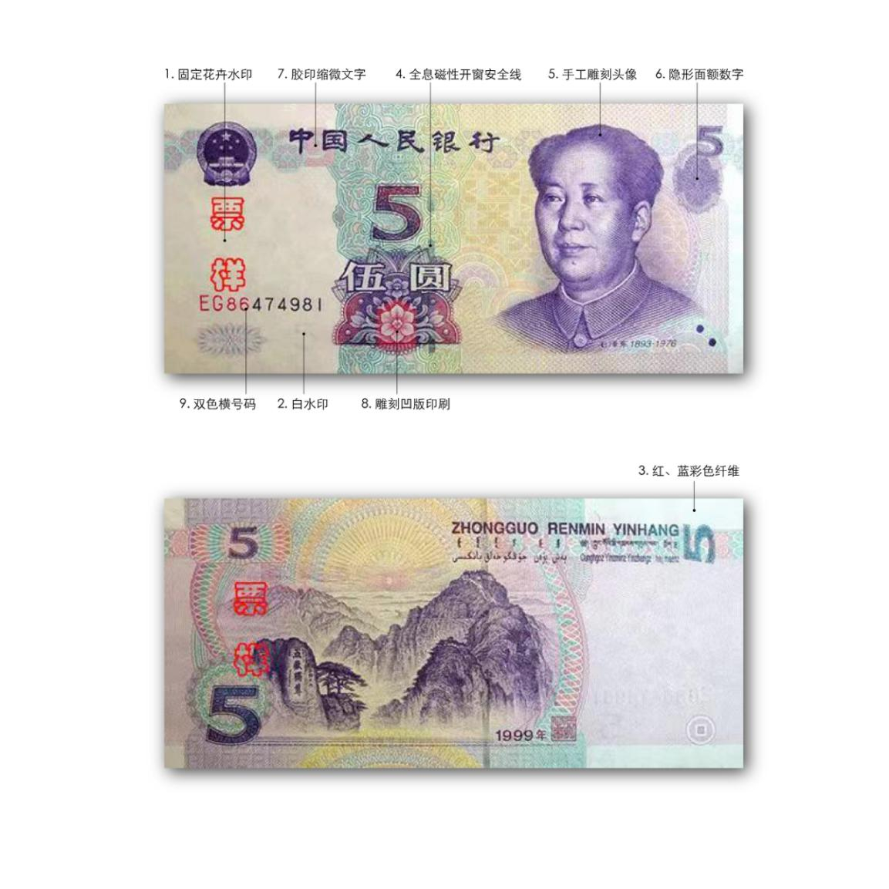
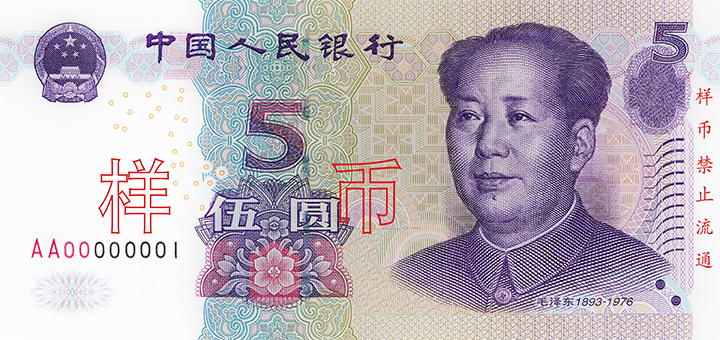
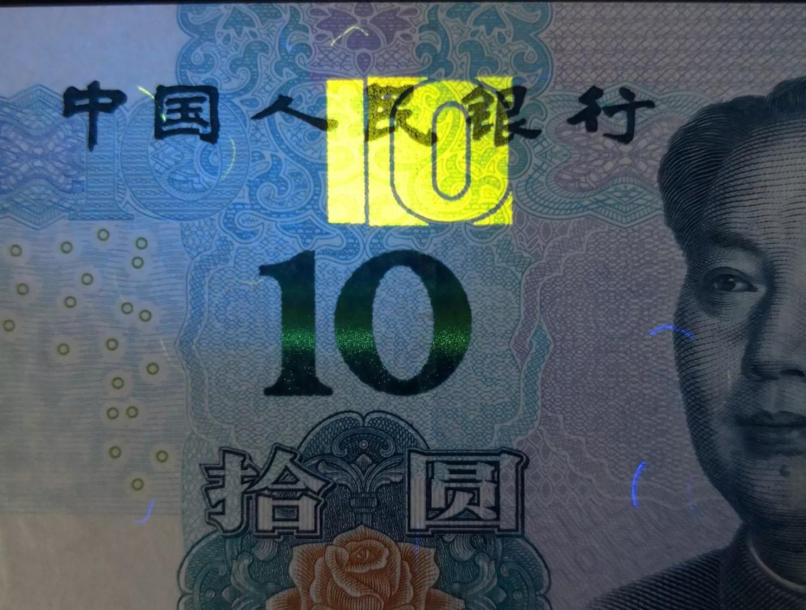
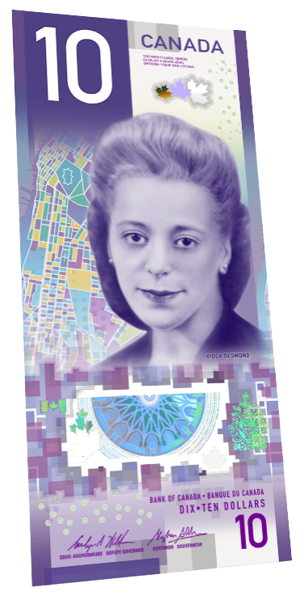
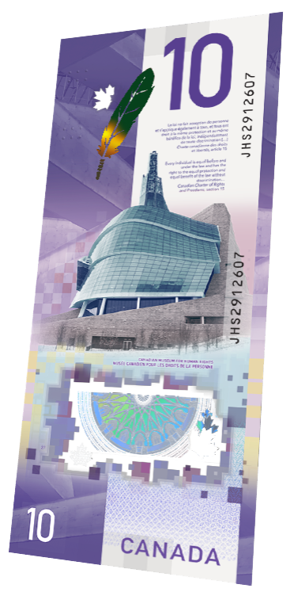
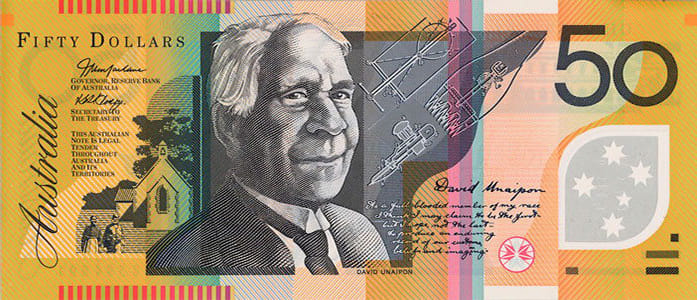
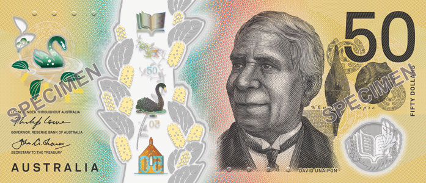

反假货币系统讲义
这不是一张张钞票的参数大全，而是一篇能把题库串起来的图文主讲义。先学会“为什么查这个、用什么方式查”，再认不同年版、面额的配置；最后把同类技术迁移到硬币和外币。目标是理解后能判断大多数票面、真伪特征题，少量精确尺寸、缩微字逐字内容等细节留给题库查表。
本讲义按810题的知识主题整理（配套习题页面目前收录前300题），涵盖人民币、硬币、外币、假币识别、发行制度、收缴鉴定和银行业务。对于时效性强或题库表述有疑问的细节，另作提示。题号仍用全库连续1—810，原题和顺序不变。下文的“新、旧”都指题库给定版本，不是对未来所有钞票的统称。
图片包括官方票样、动图以及注明来源的第三方特征照片；第三方照片不等同于官方鉴定，保留“样币／SPECIMEN”等原有标识。不用AI重画钞票，也不根据照片替实物判真伪。动图展示观察效果；凹印手感、磁性等仍须实物或相应设备。
目录｜展开二级知识点
先看总路线：不是越改越花，而是换一种办法核对
假如钞票只是印得复杂的画，摄影、扫描、打印越来越方便，就会越来越难只凭“画得像”区分。因此设计把检查分散到不同层面：
| 检查层面 | 先形成什么画面 | 对应的技术 |
|---|---|---|
| 纸或基材本身 | 不只表面有颜色，材料里面也有结构 | 水印、纤维、安全线、透明视窗 |
| 印刷工艺 | 不只远看像，摸起来、放大看也要对 | 凹印、缩微、接线、对印等 |
| 观察角度 | 正看、斜看、转动，要有规定变化 | 光变、光彩、动感、全息、隐形图文 |
| 设备条件 | 日常看似一样，材料信号并不一样 | 紫外荧光、红外、磁性 |
| 多处信息关系 | 两面、两组号码或多个部位互相核对 | 对印、冠字号码、信息防伪 |
这些是并行叠加的路线，不是水印→凹印→荧光这样的单线替代史。一个具体券别会按公众辨认、机器处理、耐用性和整体布局来组合；增加一项、取消另一项，都不能单独证明升级或倒退。
文中的“为什么”分两种：发行机关明确说明的改版原因会附来源；“像两片拼图”“一根线分担几种检查”等，是帮助理解功能的类比，不冒充真实发明史。
读图时始终问四个问题
- 是哪张钱？币种、套别／系列、年版、面额。
- 看哪里？正面还是背面，安全线还是数字，横号还是竖号。
- 怎样看？普通光、透光、转动、触摸、放大，还是仪器。
- 应该出现什么？颜色、图文、运动、触感或设备信号。
先把这四件事串起来，题库里很多“似乎每题都不一样”的问法，就会变成同一条知识的不同切面。
第一部分｜共通技术：先懂原理，再认版本
1.1 水印和纤维：把检查点放进材料里面

水印可以想成纸里面的一幅明暗图。它在造纸时形成，透过纸看出层次，不是往表面印一幅很淡的画。多层次水印看人像或花卉的深浅；白水印是较亮透的相应数字。两者可以同时存在。
纤维则像纸里散落的小丝。题库的红蓝彩色纤维在普通光下看；无色荧光纤维在规定紫外条件下看蓝、黄等相应表现。纤维可满版随机分布，不像固定图案每张都在同一坐标。
发展不是“旧水印全换成白水印”，而是提高层次、清晰度，配合数字与其他材料特征。表面像，不等于材料内部也对。基础定义可核对人民银行《金融知识普及读本》。
1.2 安全线：名字很长，拆开就容易懂


先把安全线想成结合在钞纸里的识别带。全埋是整根藏在纸内；开窗是一段显露、一段藏入，不是把钞纸挖穿。二者先回答“线与纸怎样结合”。
其他词再回答不同问题：
| 名称里的词 | 它在说什么 | 怎样检查 |
|---|---|---|
| 磁性 | 具有规定的材料信号 | 相应仪器检测 |
| 全息 | 有特定的角度相关图文效果 | 改变角度核对 |
| 镂空 | 透光可读的相应符号、文字或数字 | 举起透光看 |
| 光变 | 角度改变时颜色按规定变化 | 转动看颜色 |
| 动感 | 除变色外，还有规定运动效果 | 看亮带或图文怎样移动 |
因此，“全息磁性开窗”不是三个互斥种类，而是一根线同时具备几种属性。有磁不一定会变色，会变色也不能推出有磁。
沿人民币题库理解，常见路线是：磁性全埋线→有关券别的全息磁性开窗线→光变镂空开窗线→动感光变镂空线。它是功能增强的学习路线，不是每张钞票都依次经历四步，也不是全世界发明的年代顺序。较新的券别仍可能保留全埋线，让不同检查点分工。人民银行1999年版50元说明、2015年专题。
1.3 凹印、胶印、凸印：是怎样印，不是看起来像什么


凹印的“凹”说印版，不是说纸上印好的字必然凹下去。相应墨层可凸起、可触摸；所以摸着凸不能按字面改答凸印。普通平面照片也不能把触感一并带走。
| 工艺或设计 | 题库里先对应什么 | 不要推成什么 |
|---|---|---|
| 雕刻凹印 | 人像、行名、有关主景和文字、盲文标记等 | 整张钞票每处都凹印 |
| 胶印 | 相应底纹、对印及指定券别的有关图文 | 只要胶印就不能有防伪作用 |
| 凸印 | 本题库所考人民币横竖冠字号码 | 纸上有凸起就全叫凸印 |
| 丝网印刷等 | 特定图文、油墨应用的工艺之一 | 一种工艺统管所有币种和所有年版 |
同一张钞票用多种工艺很正常。人民币题库的“旧式光变油墨数字”按凹印考；不能拿欧元等其他币种的工艺直接改答案。工艺名称要跟具体对象走。
1.4 接线、对印、缩微、隐形：四种“细节关系”

| 技术 | 最容易想象的画面 | 它真正让你查什么 |
|---|---|---|
| 接线 | 同一根细线，前段一种颜色、后段另一种 | 衔接是否连续，有无错位、重叠或漏白 |
| 对印 | 两片拼图分放正背面，透光后拼完整 | 正反面图案及位置是否配合 |
| 缩微文字 | 远看像细纹，放大后是可读的小字 | 字形、清晰度、内容与位置 |
| 隐形图文 | 正看不明显，规定角度才看出数字或字母 | 角度改变后是否出现对应内容 |
前两种不是同一回事：接线看线内颜色怎么接，对印看两面怎么配。后两种也不同：一个主要靠放大，一个主要靠角度。它们还可以与凹印等组合使用。
这解释了为什么凹印不会简单“过时”：它不仅提供触感，还能承载更精细、更多关系的设计。新组合增加了要核对的条件，而不是只往票面多放几个名字。
1.5 光变、光彩、全息、珠光：不要把“会闪”当统一名称


旧式光变数字重点看换角度变色；光彩光变数字还看相应亮带运动。更直观的变化，方便公众在普通条件下快速检查，也不能被单一视角的照片完整表达。
但“有变化”不是工艺名称：全息看特定图像变化，珠光看相应光泽、图纹，透明视窗查材料透明区域；它们可以组合，却不是同义词。美元3D动感带也不要因为会动，就笼统等同于所有全息条。具体外币会在后文并排看。人民银行2015年专题、日本银行技术说明。
1.6 荧光、红外、磁性：给材料换一种“考试条件”


以上为同类券别的不同官方样张，并非同张纸币连续拍摄；颜色和位置也不能直接套给人民币。
- 紫外荧光：用规定紫外条件，检查哪些部位发出什么可见荧光。“有色／无色”主要说平时的状态，无色不等于照后没有颜色。
- 红外：看设备转换的图像中哪些图文保留、变淡或消失。不是红灯，也不是人眼直接看见红外。
- 磁性：仪器检查特定材料信号及分布。不能凭普通照片或“颜色很深”认定有磁。
为什么要组合？人眼看着像的图文，材料信号仍可不同；高速机具也需要稳定、可重复核对的信息。但有一点荧光、有一点磁性，都不能单独证明是真币。德国央行官方观察图及说明。
1.7 号码与防复印标记：从图文，走向信息核对
冠字号码既是印刷在票面的字符，也能被机器读取。但要分清两层：颜色、排列、磁性是实物特征；记录、关联取款和查询是银行业务。号码看起来正常，不能单凭这一点确定真伪或现金来源。
“一号双色”是同一个字符内有两种颜色，不只是整排前几位红、后几位黑；“异形”又是字符大小等有规定变化，不只是双色。
防复印标记可先理解为配合有关图像设备识别的特殊标志，不是钞票会主动禁止拍照，也不保证所有设备都拒绝复制。它与缩微字、精细线纹不是同一技术。后文版本表会说明为什么“取消某一处旧标记”不等于“全票没有防复印标记”。
第二部分｜人民币纸币：先按年版看，再按技术看
人民币纸币：快速跳转
本部分先看每一版长什么样、跟上一版相比改了什么；随后把安全线、水印、光变等技术各自串成一条线。重点是题库里的第五套人民币；第四套只作为安全线发展的前史。
先分清：第五套、年版、发行时间
“第五套”是一整套货币；1999、2005、2015、2019、2020是第五套中题库涉及的五个年版；100元、50元等是面额。年版数字不是每个面额实际发行的日期，例如1999年版各面额就是陆续发行的。并非每次改版都涉及所有面额。
| 年版 | 此次纸币面额 | 与前版关系 |
|---|---|---|
| 1999 | 100、50、20、10、5、1元 | 第五套的起点，各面额陆续发行 |
| 2005 | 100、50、20、10、5元 | 对1999年版相应券别调整；没有2005年版1元纸币 |
| 2015 | 100元 | 在2005年版100元基础上调整 |
| 2019 | 50、20、10、1元 | 前三种对照2005版；1元对照1999版 |
| 2020 | 5元 | 在2005年版5元基础上调整 |
第四套人民币的1990年版50元、100元已经有安全线，不能把1999年当成人民币使用安全线的起点。人民银行第五套介绍；央行2019年公告。
第一遍：按年版从早到晚认识纸币
1999年版：先建立共同外观，各面额的配置已经不同
第五套人民币从1999年起陆续发行。六个面额正面都有毛泽东头像，但安全线、号码等并不完全一样。下图是官方票样；标注图上方为正面、下方为背面。




先看最有用的分组：100、50元使用磁性全埋线；20元也是全埋线，但透光有分段明暗效果；10、5元已使用全息磁性开窗线；1元没有安全线。1999年版100、50元有横竖双号码；红蓝彩色纤维的题目要注意1999年版1元这个例外。
这说明一个常见误区：不能把“全埋线→开窗线”理解成1999年所有面额都是全埋线、到了2005年才第一次出现开窗线。具体线种要同时看年版和面额。央行1999年版20元说明、1999年版10元说明。
2005年版：保留熟悉的主图，对安全线、号码等作调整
2005年版发行100、50、20、10、5元纸币。下图全为正面，并与上一版同一面额比较；1元没有2005年版。



看三处变化就能理解这一版：
- 100、50元：全埋线调整为背面开窗的全息磁性安全线；横竖双号调整为双色异形横号码，并增加白水印、手感线等。
- 20元：原来的磁性全埋线调整为正面全息磁性开窗线，增加白水印、古钱币胶印对印等；背面主景也调整为凹印。
- 10、5元：原本已经有全息磁性开窗线，不能说是2005年才新增；增加手感线等，并调整一些原有特征的观察方式。
取消纸张中的红蓝彩色纤维，是指这种普通光可见的纤维；不能推成“荧光纤维也全部取消”。央行2005年20元说明、央行2005年10元说明。
2015年版：百元券把“转动看”和机读结合得更明显

从左图到右图，先找三个最醒目的变化：左下旧式光变数字改为中部光彩光变数字；右侧增加光变镂空开窗安全线；右侧增加竖号码。旧版背面的全息磁性开窗线被取消，同时新版另有中部磁性全埋线。
为什么这样设计？光彩数字和开窗线把可观察变化做得更突出；全埋磁性线及调整后的号码还服务于机具识别。两条线承担不同检查：2015年百元右侧开窗线无磁，中部全埋线有磁。横竖号码也有助于残损纸币的处理和防范拼接变造。央行2015专题、央行答问转载。
2019年版：50、20、10元形成新系列，1元另看
2019年版纸币有50、20、10、1元。没有2019年版100元和5元纸币；100元参照2015年版，5元后来在2020年发行新版。


50、20、10元都有中部光彩数字、右侧开窗线和竖号码，并有磁性全埋线。区别是：50元的开窗线有动感亮带；20、10元用光变镂空开窗线，不能一律说也有50元那种动感线。50、10元光彩数字绿变蓝；20元金变绿。


1元对照的是1999年版：增加面额数字白水印和磁性全埋线，仍只有横号码，不套用50、20、10元的光彩数字、竖号码和双安全线。央行2019年答问。
2020年版：5元把光彩数字与凹印对印组合起来

新版在中部使用金绿光彩数字，取消旧版全息磁性开窗线，使用磁性全埋线；新增凹印对印。它有两处：一处是数字与花卉，另一处是数字，透光时与背面局部图案拼合。

这里既改进公众辨认，也改善纸张强度与耐脏污表现，目的是让钞票流通过程中更耐用、更容易处理。央行2020年答问。
各面额背面：同一面额的主景沿用，不要与水印混淆


第二遍：每项技术各自怎样发展
下面每项都沿着“1999→2005→2015／2019／2020”看；箭头表示本题库中的应用变化，不表示所有面额都依次经过相同阶段。
安全线：从藏在纸里，到露窗，再叠加光变和动感
全埋／开窗说线如何与纸结合；磁性／全息／光变／动感说材料信号或视觉效果。一条线可以同时有几种属性。
| 年版与面额 | 主要配置 |
|---|---|
| 1999年100、50元 | 磁性全埋线，含相应缩微内容 |
| 1999年20元 | 磁性全埋线，透光呈明暗相间 |
| 1999年10、5元 | 全息磁性开窗线 |
| 2005年100、50元 | 全息磁性开窗线，背面开窗 |
| 2005年20、10、5元 | 全息磁性开窗线，正面开窗 |
| 2015年100元 | 磁性全埋线＋光变镂空开窗线 |
| 2019年50元 | 磁性全埋线＋动感光变镂空开窗线 |
| 2019年20、10元 | 磁性全埋线＋光变镂空开窗线 |
| 2020年5元 | 磁性全埋线 |
| 1999年1元→2019年1元 | 旧版无安全线；新版增加磁性全埋线 |
理解这条发展：原先既可透光看线，也可由机具检测磁性；开窗让部分线露出来，便于观察全息等效果；新版有的把磁性全埋线和明显的光变开窗线分工组合。不是越新就没有全埋线，也不是每根开窗线都有磁性。新版双线券别全埋线读面额数字，开窗线读“￥＋面额”。
水印和纤维：始终是纸里的检查点，细节逐步调整
水印是在纸内形成的明暗层次，透光看；白水印则表现为透光性较强的数字。1999版10元已经有白水印，2005版部分面额增加白水印，2019版1元也增加；不能误认为它是2015年才出现的技术。新版花卉水印仍对应原来的花卉，重点改善清晰度与层次。
| 面额 | 背面主景 | 固定多层次水印 |
|---|---|---|
| 100、50元 | 人民大会堂、布达拉宫 | 毛泽东头像 |
| 20、10元 | 桂林山水、长江三峡 | 荷花、月季 |
| 5、1元 | 泰山、西湖 | 水仙、兰花 |
1999版有关券别有普通光可见的红蓝彩色纤维，1元是例外；2005版取消这种红蓝彩色纤维。无色荧光纤维是另一回事：按题库口径，第五套各年版、各面额均有，紫外下观察蓝、黄色，随机分布。
光变数字：从旧式变色，到光彩变色加亮带
| 券别 | 在哪里 | 角度变化 |
|---|---|---|
| 1999、2005年100元旧式光变数字 | 正面左下 | 绿／蓝 |
| 1999、2005年50元旧式光变数字 | 正面左下 | 金／绿 |
| 2015年100元、2019年20元、2020年5元光彩数字 | 正面中部 | 垂直看偏金、倾斜看偏绿，并有亮带 |
| 2019年50元、10元光彩数字 | 正面中部 | 垂直看偏绿、倾斜看偏蓝，并有亮带 |
旧式数字重在看颜色变化；新版光彩数字还看亮带滚动。位置和颜色都要同时核对，旧50元和新50元不能混为一谈。人民币题库把旧式光变数字按凹印考，但不能据此认定所有币种的光彩数字都用凹印。
凹印、对印、隐形和缩微：精细印刷持续组合
凹印是印版工艺，部分印出的墨层有触感；对印是正背面局部透光拼合；缩微是放大后才能读的小字；隐形数字要按规定角度看。它们可以组合，但不等于同一件事。
| 版本 | 题库里最有用的对印变化 |
|---|---|
| 1999 | 100、50、10元有古钱币胶印对印；20、5、1元没有 |
| 2005 | 100、50、20、10元有胶印对印；5元没有 |
| 2015／2019 | 2015年100元和2019年50、20、10元的胶印对印拼成面额数字 |
| 2020 | 5元有两处凹印对印；不是胶印对印 |
1999年版1元背面和1999年版20元背面不能套用“背面主景凹印”；2005年版20元背面已采用凹印。独立手感线在新版部分券别取消，也不等于雕刻凹印被全部取消。
号码、荧光和机读：外观与材料信号分开看
| 号码版本 | 外观与检测要点 |
|---|---|
| 1999年100、50元 | 横竖双号码；黑色横号码整体有磁 |
| 2005年100、50元 | 双色异形横号；前4暗红无磁，后6黑色有磁 |
| 2015年100元、2019年50／20／10元 | 横号暗红、黑色部分均有磁；竖号常光蓝、紫外绿、无磁 |
| 1元、5元有关年版 | 只有双色横号码，不套用新版大面额竖号 |
号码是什么颜色，不自动决定有没有磁。“一号双色”指同一个字符本身有两色，也不同于一排号码前红后黑。冠字号码按题库所考为凸印，和有凹印触感的头像、行名要区分。
荧光看紫外下哪个部位出现什么颜色：正面无色荧光数字、背面有色荧光图案、纸内无色荧光纤维、竖号码荧光是四个不同对象。题库所列背面有色荧光：100元葵花灯橘黄，50／10／1元有关底纹黄色，20／5元有关底纹绿色；具体位置仍按面额核对。红外需要设备成像，磁性需要设备测信号，均不能靠照片判断。
防复印标记的变化也要限定范围：1999年版1元首用，不是1999年全部面额都有；2005年版各面额都有。各版标记的位置和数量需按券别核查；发行资料明确2015年版100元取消背面右下角旧防复印标记，但不能仅凭这一条推断其他部位的数量。
看完两遍再做题：先在第一遍定位“哪一年、哪个面额”，再到第二遍找所问技术，最后核对位置、观察方法和预期结果。
人民币纸币｜专题详解：用一张票串起考法
年版部分解决“这张钱是哪一版”；本部分解决“这项技术是什么、怎么看、不同版本有哪些变化”。遇题时先找该技术，再核对年版、面额、位置、观察条件和结果。本部分依题库所涉及的第五套纸币整理，纪念钞另看专章。
一、票面身份：先把年版、面额、正背面看对
| 面额 | 题库所列年版 | 背面主景 | 正面固定多层次水印 |
|---|---|---|---|
| 100元 | 1999、2005、2015 | 人民大会堂 | 毛泽东头像 |
| 50元 | 1999、2005、2019 | 布达拉宫 | 毛泽东头像 |
| 20元 | 1999、2005、2019 | 桂林山水 | 荷花 |
| 10元 | 1999、2005、2019 | 长江三峡 | 月季花 |
| 5元 | 1999、2005、2020 | 泰山 | 水仙花 |
| 1元 | 1999、2019 | 西湖三潭印月 | 兰花 |
例如：看见背面桂林山水，能先认作20元；若要回答安全线是哪一种，还要继续判断是1999、2005还是2019年版。面额、主景、年版分别回答不同问题。人民银行票样目录。
背面还印有汉语拼音行名及蒙、藏、维、壮四种少数民族文字；行长章是印章，不是手写签名。看图时不要把正面印刷花卉和纸内透光水印直接当成同一幅图。
二、水印：一张钞纸里，为什么能透出一幅图？
想象一张纸厚薄不同：迎光看时，不同部位透过的光不一样，形成明暗层次。水印是钞纸制造时形成的纸内结构，迎光观察；不是再用浅色墨水印一幅画。正面左侧是识别位置，图案水印看人像或花，白水印看明亮、透光性强的面额数字；同张纸币上可以都有。
| 正常看票面，水印区看起来较淡 | 2015年100元：迎光看人像水印 |
|---|---|
|
|

人像水印与白水印都在正面左侧附近，但不是同一个图案，也不一定在完全相同的位置。题目写“白水印图案为水仙花”就是把两个对象混在一起：花卉是多层次水印，白水印是数字。
四种花如何认：每个面额单独看
| 面额 | 固定花卉水印 | 容易混淆的对象 |
|---|---|---|
| 20元 | 荷花 | 背面的桂林山水不是水印 |
| 10元 | 月季花 | 不能把20元的荷花挪来 |
| 5元 | 水仙花 | 数字“5”白水印不是水仙花 |
| 1元 | 兰花 | 背面的西湖不是水印 |
下面是人民银行公开的真实票样动态演示。每组先观察没有明显图案时的位置，再等动画出现透光效果；图中花卉的明暗层次不是印在纸面上的另一幅画。画面标注的是演示所用年版，不能把图像细节当作所有年版完全相同。
| 2019年版1元：兰花 | 2020年版5元：水仙花 |
|---|---|
 |
 |
| 2019年版10元：月季花 | 2019年版20元：荷花 |
|---|---|
 |
 |
| 2019年版50元：人像水印 | 2019年版10元：数字白水印 |
|---|---|
 |
 |
普通光票样能帮助找水印区，却不能把纸内水印完整拍出来。100、50元用人像水印；20、10、5、1元使用上述花卉水印。不同年版的花卉名称不因水印清晰度提高而随意改变。2019年版官方动态演示、2020年版5元官方动态演示。
水印怎么发展，为什么保留？
1999年版10元、5元已有白水印；2005年版有关券别再增加白水印；2019年版1元也增加数字白水印。新版还提高图案水印的清晰度与层次。意义是把需要核对的东西放在纸内，迎光即可检查，不必把所有防伪都放在票面表面的图案上。这是功能解释；具体券别须按年版看，不能说“1999年所有面额都有白水印”。央行1999年10元、央行2019年答问。
三、纤维：纸里随机的小丝，不是固定印刷图案
把纤维想成造纸时散进纸浆的小丝：一张纸上可以出现多根，位置并不要求张张相同。题库反复考的是两种观察条件：
| 项目 | 普通光下 | 在紫外光下 | 版本要点 |
|---|---|---|---|
| 红蓝彩色纤维 | 可见红、蓝色细纤维 | 本题重点不是其紫外颜色 | 1999版有关券别使用，1999版1元例外；2005版取消 |
| 无色荧光纤维 | 通常不显眼 | 按题库观察到蓝、黄荧光 | 题库认为第五套各年版、各面额均有，随机分布 |
| 1999年50元官方特征图标出了红蓝纤维 | 2019年1元票样：不可用肉眼照片证明荧光 |
|---|---|
|
|
左图中的字是官方对特征的标注；受图片尺寸限制，不等于这张缩图能把每根纤维放大看清。右图没有紫外灯效果，不能根据照片判断无色荧光纤维的颜色。
这张德国联邦银行的欧元照片可帮助建立“纤维是随机散落的细丝，不是整齐排列的印刷图案”的画面。它不是人民币图片；人民币题目的颜色仍按上表中的蓝、黄来判断。德国联邦银行票样及防伪特征。
为什么有两类？它们给检查者提供不同观察方式：彩色纤维可在普通光下观察；荧光纤维则要借紫外光显现材料信号。2005年取消红蓝彩色纤维，不等于把荧光纤维一起取消，也不能说新版钞纸没有纤维。
四、安全线：先看藏在哪里，再看能做什么
先想象一条与钞纸结合的细带：有的整条埋在纸里，有的一段露在表面、一段埋在纸里。前者称全埋，后者称开窗。透光看线、转动看光学效果、用仪器测磁性，分别是不同检查。
| 2005年50元：背面露出的开窗线 | 2015年100元：右侧光变开窗线 |
|---|---|
|
|
| 名称 | 先看什么 | 名称不自动代表什么 |
|---|---|---|
| 全埋式 | 线在纸内，迎光看线条和相关文字 | 不代表一定看得见裸露窗口 |
| 开窗式 | 线体有些段露在纸面 | 开窗本身不等于一定有磁或一定动感 |
| 全息磁性开窗线 | 开窗、全息图案、磁性组合；可查相应缩微字 | 不等于后来的光彩数字 |
| 光变镂空开窗线 | 改变角度看色彩，透光看线内镂空字符 | 变色不自动证明有磁 |
| 动感光变镂空开窗线 | 在光变基础上看规定的亮带运动 | 不是所有2019年版面额都有 |
按年版和面额查线，而不是只背一条箭头
| 年版／面额 | 线的配置与识别点 |
|---|---|
| 第四套1990年版100、50元 | 早期全埋安全线；年版与实际发行日是不同概念 |
| 1999年版100、50元 | 磁性全埋线；可透光看相应缩微文字 |
| 1999年版20元 | 磁性全埋线，透光呈分段明暗相间 |
| 1999年版10、5元 | 全息磁性开窗线，正面中间偏左露窗；1999年版10元是题库所考首次应用节点 |
| 2005年版100、50元 | 全息磁性开窗线，背面开窗 |
| 2005年版20、10、5元 | 全息磁性开窗线，正面开窗；其中10、5元并非此时才第一次使用 |
| 2015年版100元 | 右侧光变镂空开窗线＋中部磁性全埋线 |
| 2019年版50元 | 右侧动感光变镂空开窗线＋中部磁性全埋线 |
| 2019年版20、10元 | 右侧光变镂空开窗线＋中部磁性全埋线 |
| 2020年版5元 | 磁性全埋线，原全息磁性开窗线取消 |
| 1元 | 2019年版较1999年版增加磁性全埋安全线；不要把“大面额双线”套给1元 |
同是1999年版，100、50元和10、5元的线不同；同是2019年版，50元的动感线与20、10元的光变线也不同。“年版”是同一系列设计，不要求所有面额配置一模一样。至于1999年当初为什么为这些面额分别选择不同线种，现有公开资料能确认配置，但不足以确定每个具体决策原因；不能把合理推测当成央行当年的原话。
2015年100元两条线：最容易被合成一条来考
| 检查对象 | 在哪里 | 看什么 | 磁性 |
|---|---|---|---|
| 光变镂空开窗线 | 正面右侧 | 垂直看品红、倾斜看绿；透光可见正反交替“￥100” | 题库所考线体无磁 |
| 磁性全埋线 | 票面中部 | 透光读镂空面额数字“100” | 全线有磁，可机读 |
2019年版50、20、10元的开窗线读取“￥＋面额”，全埋线读取面额数字；字符、位置和是否有磁须绑定具体线种。不要因为一个选择项写了“100”就忽略前面是否有“￥”。央行2015专题、央行2019公告。
为什么从光变走向动感？
光变让公众不用设备，通过转动就能看到颜色变化；动感再加入规定方向的亮带运动，相当于多了一个可观察的关系。看照片只能看到某一瞬间，动图更容易理解。这是技术能提供的检查能力，不表示所有颜色变化都一定采用同一种材料或所有新券都会采用动感线。
五、光变数字：看颜色，也看是不是有亮带
面额数字与安全线是两个不同部位。先看正面左下还是中部，再转动：
| 券别 | 数字及位置 | 正对／低角度的大致变化 |
|---|---|---|
| 1999、2005年100元 | 左下旧式光变油墨数字 | 绿／蓝 |
| 1999、2005年50元 | 左下旧式光变油墨数字 | 金／绿 |
| 2015年100元 | 中部光彩光变数字 | 金→绿，亮带上下滚动 |
| 2019年20元、2020年5元 | 中部光彩光变数字 | 金→绿，亮带上下滚动 |
| 2019年50元、10元 | 中部光彩光变数字 | 绿→蓝，亮带上下滚动 |
| 2019年1元 | 未使用这组光彩光变面额数字 | 不套用以上色组 |
| 金绿示例：2015年100元 | 绿蓝示例：2019年50元 |
|---|---|
|
|
“正对”说的是视线大致垂直票面，不是说把票竖着拿。1999年50元左下金绿，与2019年50元中部绿蓝正好是典型对比。旧式光变油墨数字在题库中按凹印考；新式光彩数字不能因名字里有“光变”就套旧工艺。
六、冠字号码：字怎么排、什么颜色、有没有磁是三道题
冠字号码可以先理解成票面上的识别编号；记录和查询它又属于银行业务，两者有关联，但问法不同。第五套通常是一组10位字母和数字；横、竖是方向，双色是颜色，异形是字形高度变化。
| 票面 | 横号码 | 竖号码及磁性 |
|---|---|---|
| 1999年100、50元 | 左下黑色横号，整体有磁 | 右侧还有竖号码 |
| 2005年版100、50元等题库所考旧式双色横号 | 前4位暗红无磁、后6位黑色有磁 | 不能说红黑两部分都磁性相同 |
| 2005年100、50元 | 双色异形横号；字高由中间向两边递减 | 不套用1999年的双号码配置 |
| 2015年100元、2019年50／20／10元 | 前4暗红、后6黑，横号整组有磁 | 右侧竖号可见光蓝色、紫外绿、无磁 |
| 1元、5元有关年版 | 左下双色横号 | 不附加新版大面额的竖号 |
| 1999年版100元横竖双号码 | 2015年版100元横竖双号码 |
|---|---|
|
|
1999年版10元的“一号双色”边界字符及其磁性仍须专项核验，不可机械套用前4位、后6位的分段模型。“一号双色”是一个字符内部呈两种颜色；“一组号码前红后黑”是多个字符之间分色。名字看上去相似，观察对象却不同。题库首用节点为1999年版10元；人民币横竖号码所考印刷方式为凸印。磁性不能通过图片颜色断定，须结合指定年版的配置和仪器检测。
七、荧光、红外、磁性：给同一张票换检查条件
紫外：先分荧光数字、底纹、号码和纤维
| 对象 | 平时看什么 | 规定紫外条件下看什么 |
|---|---|---|
| 正面无色荧光面额数字 | 行名下方相应区域平时不显眼 | 显示黄色面额数字 |
| 背面有色荧光图案 | 平时可见相应图纹 | 相应部位出现规定荧光颜色 |
| 新版竖号码 | 平时为蓝色 | 2015年100及2019年50、20、10元呈绿色 |
| 无色荧光纤维 | 纸中随机小丝，普通光不显眼 | 题库所考蓝、黄色荧光，随机分布 |
背面底纹也按面额分：100元主景上部葵花灯橘黄色；50元主景上下方黄色；10、1元主景两侧黄色；20、5元主景两侧绿色。要同时确认币种、正背、部位、光源和颜色。普通光照片只能定位票面，不能证明紫外效果。
荧光特征参考图：数字、号码、图案和纤维分别看

这张来源于BANKOMAT 24的四图对照中，上方是正面、下方是背面；左边是2005年版、右边是2015年版。正面行名下方标出了面额数字区域，右上图2015版右侧可见竖号码；黄色区域是否经过后期强调、拍摄条件及真实颜色未独立核实，须以权威资料为准。背面主景上方的葵花灯图案呈橘黄色。画面中还可见随机分布的小细丝，不要把发亮的大块数字当成纤维。图片及原文。
| 2005年版5元背面：看主景两侧绿色装饰 | 2005年版20元背面：看绿色区域 |
|---|---|
 |
 |
| 10元正面：先看行名下方的位置 | 观察边界 |
|---|---|
 |
第三方图像的拍摄条件、年版及是否后期处理未独立核实，仅作位置线索，不作为真实紫外效果或色彩的权威证据。 |
5元、20元照片分别来自商品展示，10元局部来自转载资料，并非央行官方验钞图，样张真伪未独立鉴定，拍摄波长与色彩校准也未完整披露；颜色以题库及权威资料的规定为准。单张图片只说明所示票样，不能独立证明所有券别。图片来源见文末；公开发布前须核实图片授权。
红外：设备显示哪些图文保留或变淡
红外不是“照红灯肉眼看”。相应设备把材料的红外反应转成图像，某些图文显现、另一些变淡或消失。以下是同券别不同实体的欧元官方图，只用来理解设备图像与普通光不同，不能把欧元的消失区域照搬到人民币。
| 普通光：第一版50欧元背面 | 红外设备：同券别另一张样张 |
|---|---|
|
|
题库所考人民币例子：2015年100元背面主景中部及右侧、2019年50／20／10元背面相应主景中右部具有相关红外特征。题目给不同选项时按题库的特征口径判断；不能把某道题中排除的券别推广成任何年版都不存在任何红外反应。
磁性：信号与颜色、动感分开
检测的是规定位置和分布的磁性信号，可供设备识别。线会变色不保证它有磁；号码是黑色也不能单凭颜色断定整组均有磁。2015年100元的两根线及新旧双色号码对照，是本题库最高频的两个例子。
八、印刷、对印、缩微、隐形与防复印：不要把细节名称混成一类
印刷工艺和触感
雕刻凹印的“凹”说的是印版图文部分，印到纸上的墨层反而可有凸起触感；凸印则是另一种印刷工艺，人民币冠字号码按题库所考使用凸印。胶印常用于精细底纹等图文；它也可以承担对印等防伪设计。手摸有凸感，不能直接答“凸印”。
1999年版1元使用专门凹印手感线；2005年版有关面额有正面右侧自上而下排列的手感线；2015年100元和2019年有关券别取消独立手感线，但其他凹印图文仍在。1999年20元背面主景是胶印，2005年20元背面主景改为凹印；1元背面不套用其他面额背面凹印结论。
对印：两面图案透光合在一起
| 券别 | 图案与工艺 |
|---|---|
| 1999年100、50、10元及2005年100、50、20、10元 | 古钱币图案胶印对印；旧版位置还要按券别分 |
| 1999年20、5、1元及2005年5元 | 没有上述胶印对印 |
| 2015年100及2019年50、20、10元 | 正面左下与背面右下局部拼成面额数字，胶印对印 |
| 2020年5元 | 两处凹印对印：数字与花卉、数字；正背相应部位透光拼合 |
没有胶印对印不等于没有任何对印：2020年5元就是凹印对印。纪念钞先于流通钞使用凹印对印，问“首次”要区分适用范围。
缩微、接线和隐形：分别看大小、衔接、角度
缩微是放大后才能辨认的小字；接线是同一线条不同颜色准确衔接；隐形数字要按指定角度观察。老版100元的凹印缩微在正面右上隐形数字外围、背面左下大数字及背面主景下方；老版50元不能照搬老100元正面那一处。2015年100元把正面相关缩微位置调整到团花等部位。题库关于某些缩微位置的概括存在表述范围不清，应以具体券别题核对。

上图上半部将100元正面行名附近的小字放大；下半部将背面主景下方、YUAN右侧的数排“RMB100”和“人民币”放大。来源未完整标明年版，上下局部也不一定来自同一实物，不能当作1999、2005或2015年版每个位置均已核验；照片不能单独证明是凹印、量出字高或鉴定真伪。中银富登转载的宣传资料。
这张动图明确是2015年版100元，展示正面行名附近的缩微文字；它不是正面团花中的缩微，也不是背面大数字内部的图像。图片出处。针对第89、90题各指定部位，尚缺可核验的匹配放大图，不用不相干位置冒充。
隐形数字通常在旧版正面右上区域，接近与票面平行的视线下按规定转动或倾斜看；1999年版1元操作与同年某些面额不同，不能写成所有券别的动作完全一样。2015年100元取消旧隐形数字，并不表示所有年版都没有隐形数字。
防复印标记：它是信息防伪，不是荧光图案
题库记1999年版1元首次应用；不能扩成1999年版所有面额都有。2005年版所考各面额均有。标记数量及位置需按年版和面额核对；2015年版100元取消了背面右下角旧防复印标记，不能仅据此推断其他背面标记的数量。它由特定图案组成，配合有关设备识别；不是用紫外灯才能观察，也不是承诺任何设备都绝不能复制。
人民币硬币：从金属、边部到会“变”的图文
拿起硬币，不要只问“背面是什么花”。把它想成一枚立体身份证：材料是底子，币面是脸，边部也是信息，转动和机读还能查另一层特征。人民币硬币部分对应 C 类 42 题；题号均用全库连续id。
一、先把套别与版别分开
题库所说的三套流通硬币，指第二、第四、第五套人民币的有关硬币；硬分币属于第二套，面额包括1、2、5分，不能因为生活中少见就漏选。纪念币则分普通纪念币与贵金属纪念币，不是“金银币、普通币、非流通币”三个并列类别。
硬币上的年份通常是生产年份，不等于版别。下图旧5角印着“2002”，仍是1999年版的样式；不要据年份另造一版。央行版别答问对此有明确说明。
二、1999／2005到2019：不是统一换材料
| 1999年版5角正面 | 2019年版5角正背面 |
|---|---|
 |
 |
先看金黄变镍白，再看内周缘：变的是里面的轮廓，不是把硬币外边变成十一边形。
| 面额 | 1999／2005基线 | 2019变化与保留 |
|---|---|---|
| 1元 | 菊花；钢芯镀镍；外缘滚字 | 缩小、减重；保留材料和滚字；正面内缘加圆点，数字轮廓内加隐形图文 |
| 5角 | 荷花；钢芯镀铜合金；间断丝齿 | 改钢芯镀镍、镍白色；外圆内十一边形；仍是间断丝齿 |
| 1角 | 兰花；1999版铝合金，2005版改不锈钢；光边 | 沿用2005版材料和直径，正面内缘加圆点，仍是光边 |
三种面额还调整数字造型、适当收缩背面花卉。菊花、荷花、兰花是定位线索，不是全部防伪知识。5角不是梅花，1元也不是第四套的牡丹。
| 2019年1元：菊花 | 2019年1角：兰花 |
|---|---|
 |
 |
为什么1元缩小、5角换材？央行答问说明前者改善便携性，后者涉及原生产工艺按产业政策拟淘汰，改材后抗变色性能也提高；内周缘改为多边形还方便弱视者识别。不能笼统理解成“每次都换更贵的金属”。
这里要防一道比较陷阱：第409题答案包含“材质调整”，但央行2005版说明表明1角已改不锈钢，2019公告明确材质不变；只相对1999版才有材料变化，不能背成“2019又换一次”。
三、材料与机读：银白色不等于同一种金属
钢芯镀镍像“钢底子穿镍外衣”，不锈钢则是另一种材料路线。第四套有关硬币已应用钢芯镀镍；控制镀层厚度和材料参数，能形成机读识别依据，不能看见白色便一律选不锈钢。
机具不只是照相，也可综合直径、厚度、质量、电磁响应，以及表面和边部图文等信息；图像识别还涉及隐形图文、缩微细节。普通照片无法证明合金成分或电磁特征，磁铁吸得住也不能单项定真伪。这是在解释技术功能，不为每次改版编造动机。
四、转一下：隐形图文不是花纹自己移动

等动图切换角度，比较“¥”与“1”的出现。这是借精细雕刻结构让不同角度显出不同图文；不是水印，也不是纸币光变油墨。相对第四套，第五套1元已增加边部滚字；相对旧第五套，2019年1元新增的是这组隐形图文，滚字是保留项。央行专题可同时查看正面与侧面演示。

现在看侧面，才是外缘滚字；别把正面角度显图的动图，认成边上的字在变化。
五、普通纪念币走两条组合路线
| 泰山：黄铜、圆角方形 | 三江源：圆形、外环与内芯双色 |
|---|---|
 |
 |
两图来自中国印钞造币泰山图样页、三江源图样页。图能比较外形与双色，不能直接看到内部复合层。
| 题库技术路线 | 组合记忆 |
|---|---|
| 2015第二轮贺岁羊年币→建党百年、国家公园等10元品种 | 双金属结构＋复合材料币芯＋斜全齿间隔半齿＋隐形图文＋微缩文字；国家公园系列从三江源起步 |
| 2019泰山→武夷山等世界遗产5元品种 | 泰山在我国普通纪念币中首用异形和疏密齿；黄铜、圆角方形，背面隐形图文含世界遗产标识；不是复合币芯路线 |
| 冬奥5元→中国京剧艺术5元 | 续用疏密齿、隐形图文、微缩文字；冬奥雪上币首次把彩色喷墨用于人民币普通纪念币，京剧再组合应用彩印 |
这不是新路线淘汰旧路线；更不是全球造币技术首创史。“2019以后5元用疏密齿”限本库所列系列，不能推成未来所有5元的永久规则。冬奥的精确应用序号不作主记忆。
六、最后分清三种边齿与两种小字
间断丝齿是有齿段与光滑段相间；疏密齿是齿的间距疏密相间；斜全齿间隔半齿则要看斜齿及全齿、半齿的交替，不能只凭“间隔”二字混选。
第二轮贺岁币数字“10”轮廓内看隐形“RMB”与“10”变换，数字底端放大看微缩文字；不是同一项。京剧币的彩印、隐形图文、微缩文字在背面，边齿当然在侧面。先认品种，再核材料—边部—角度变化—放大细节，比只记花名可靠；细小尺寸、齿数与字串变体不展开，逐题覆盖程度可在本文末尾的题号索引中查看。
人民币纪念钞：从纸内、印刷到透明视窗
把四个节点看成检查动作的扩展：航天钞把转动与透光组合，70周年钞强化动感与精细印刷，冬奥钞把纸和塑料配成一套，2024贺岁钞再组合透明窗与全息。这不是旧技术全部退场，也不等于普通流通券都改塑料。纪念钞部分对应 23 题，均用全库连续id；第693题是普通券主色调，不纳入。
一、2015航天：会动的线，与能拼合的凹印

在官方票样先找中部线、右侧对印区。动感光变开窗线在正面露窗，星形和“100”是内容；垂直看金色、倾斜看绿色，伴亮带滚动。凹印对印则要透光，正面右侧与背面上方拼成卫星及面额图案，兼有凹印工艺，不能改成“侧光看风筝”。
题库的两项“首次”限定人民币应用，不是全球发明。左下大数字中的凹印缩微才含“100”和风筝；横竖双号码中，横号码采用红黑接线，别把接线给了竖号码。第404题按题库记：横号码前5位上半红、下半黑，后6位上半黑、下半红；这是题库专业细节，静态图不适合据此独立验证。
二、2018年70周年：同样会动，位置和内容却不同

安全线换到背面，辨古钱图案和人民币符号；题库第407题将其表述为古钱图案与面额数字，具体字样以央行公众防伪说明为准；正面左下光彩“50”由金转绿、亮带上下滚动。透光看长城多层次水印及“50”白水印，两者并存。央行公众防伪说明支持这些动作。
专业印刷按题库正确选项分开：凹印接线在正面大树年轮和背面右下面额；凹印缩微“50”在背面右下数字内。接线看颜色衔接，缩微看小字，不是正面右上大数字，也不是银行大楼。
三、冬奥冰与雪：一套两种基材
| 冰上：塑料钞 | 雪上：纸钞 |
|---|---|
 |
 |
| 下方透明窗、全息动感数字；题库新增磁性数字 | 下方全息3D灯笼；纸内仍有水印 |
由央行发行及防伪说明对照：两张都用全息，但不能说都有全埋安全线。磁性数字是机读检查点，不是照片里“数字发光”。冰钞光彩变化的是乐谱，雪钞是雪花，勿偷换成“新用光彩面额数字”。
“首次成套、竖版”限定人民币纪念钞；冰钞不是首张人民币塑料纪念钞，前面还有2000年迎接新世纪纪念钞。
四、2024贺岁：透明窗不等于全息

按本库序列，2024年贺岁钞是第三张人民币塑料纪念钞；这是历史次序，不是截至2026年的完整清单。此后已有2025年、2026年贺岁纪念钞，后续年版不能直接套用本张的图案。透明窗让你查材料通透，全息让你转动看多色动感，两者可结合却不是同义词。“福”字可双面观察，背面金色才是央行规定效果，不是正面金色。
技术组合让眼睛、手和机具各有检查点，这是功能解释，不是未经证实的发行动机。静态票样仅帮定位，不能证明全息运动、金色效果或磁性。
外币：先认版本，再看它怎样升级
外币不是人民币特征的换皮版。先确定币种—版别—面额，再找检查点；同叫水印、全息，图案和配置未必相同。下面年份是有关券别的应用节点，不是全球技术首创年表。图片保留官方样币标识，静态票样只能定位，不能证明动感、手感或磁性。题号均为全库连续id。
换成不同国家的钱，主线仍然相通：从静态图案增加材料与角度检查，从较小的光学区扩展成容易找到的大窗口，同时保留凹印、机读和便于识别的设计。下面会解释这些变化增加了什么检查能力；不把功能上的理解冒称为每家央行的完整发行动机。
一、美元：小头像、大头像，再到彩色背景与动感带
| 小头：1990年代早期100美元 | 大头：1996年起100美元 | 彩钞：2013年起100美元 |
|---|---|---|
 |
 |
 |
顺着图看：先是椭圆框里的小头像，随后头像扩大、增加右侧人像水印，最后出现彩色背景和醒目的蓝带。小头不等于没有安全线：图中的1990年代100美元已有全埋线和缩微字；1996年大头百元增加水印、光变数字，不是那时才第一次加线。彩钞也不是各面额同年改版：20美元先于100美元进入彩钞阶段。
彩钞100美元要分清三处：蓝色3D动感带里的自由钟与100互换，前后晃时左右移动，左右晃时上下移动；墨水瓶内自由钟、正面右下100则是铜色变绿色。蓝带之外还保留全埋线，不能把两者当同一根。大头百元的光变数字是绿变黑；彩钞光变面额数字用于10、20、50、100，不用于5。彩钞5水印由林肯头像改为右侧大5、左侧三个小5。美国百元新旧版、5美元。
最有用的搭配：人像、建筑、线的颜色各有归属
| 面额 | 正面人像／背面建筑 | 大头、彩钞全埋线的紫外颜色 |
|---|---|---|
| 5 | 林肯／林肯纪念堂 | 蓝 |
| 10 | 汉密尔顿／财政部大楼 | 橙 |
| 20 | 杰克逊／白宫 | 绿 |
| 50 | 格兰特／国会大厦 | 黄 |
| 100 | 富兰克林／独立堂 | 粉红 |
这些联储券票幅相同，却不表示图案相同。全埋线也不能互换：100、20的线在人像左侧，10、50和彩钞5在人像右侧；线中文字随面额变化，10、20可见英文面额和旗帜，100是USA与100，不带旗帜。大头5的线位不要套用彩钞5。10美元、20美元、50美元。
彩色底纹不是精细线纹，印章也不是人像的印法
红蓝纤维随机进入纸内；大头的精细线纹与彩钞的彩色底纹不是同一项，彩钞各面额底色也不同。主景、人像等用凹印；彩色背景及百元羽毛笔涉及胶印；号码和印章用凸印。彩钞5、100的背面有缩微字，不能顺推50也有。大头起号码首字母对应年版，第二字母对应联储银行；左上号码下的字母加数字也是银行标识。美国印钞局生产流程、号码说明。代表题144—150、429—448、715—723。
二、欧元：建筑主题延续，把欧罗巴人像加入检查点
| 第一版50欧元：2002年起 | 第二版50欧元：2017年起 |
|---|---|
 |
 |
两版都以不同时代建筑为线索：正面门窗，背面桥梁；不同面额不是同一幅建筑图。第二版保留对应面额主色调和主题，不是逐笔照搬旧图。第一版七种面额，第二版六种，不含500；没有新版500不等于旧500失去法定货币地位。第二版从2013年5欧元开始，至2019年100、200欧元补齐。ECB版别说明。
| 检查点 | 第一版 | 第二版欧罗巴系列 |
|---|---|---|
| 水印 | 门窗、数字等，不是欧罗巴人像 | 欧罗巴人像、门窗、数字 |
| 全埋线文字 | EURO与面额 | €符号与面额；两版都偏中左 |
| 转动看数字 | 50及以上背面数字紫变橄榄绿 | 正面左下翠绿变深蓝，并有上下移动亮光 |
| 全息 | 小面额条带，50及以上块状标 | 条带加入人像；20及以上另有透光人像视窗 |
| 正背面对印数字 | 有 | 不沿用该旧版对印设计 |
| 珠光条 | 背面5、10、20 | 扩展至本题库所考第二版各面额 |
看新版50欧元，先找左下光彩数字、右侧全息条，再把水印人像与视窗人像分开。全息标的微孔€符号、透明人像视窗、普通水印不是同一结构。德国央行第一版50欧元、第二版50欧元。
设备题先分观察条件：第一版荧光纤维是一根一种颜色，第二版一根可呈红、黄、蓝三色；这不是整张纸发亮。红外图像常保留正面主景右部，但背面也须按版别、面额和具体图文核对，别把“背面全部使用”反推为“背面全无红外特征”。正面建筑的凹印与背面桥梁的胶印也别混同。ECB柜员资料。代表题151—157、449—464、724—728；文字缩写数量和缩微坐标不作为主线硬背。
三、港元：三行图案可以不同，两代检查框架逐步统一
| 中银2010系列100港元 | 中银2018系列100港元 |
|---|---|
 |
 |

汇丰、中银香港、渣打发行20、50、100、500、1000港元五种普通纸币；10港元另由香港特区政府发行。2010年已统一主要防伪位置，但三行图案不必相同；2018年进一步统一同面额背面主题，背面改竖式。不要把“三行”误背成三行各占固定比例。金管局2018系列、发钞机构说明。
| 检查点 | 2010系列 | 2018系列 |
|---|---|---|
| 显眼光学图案 | 绿、金变色，横亮带上下滚动 | 动感圆环随倾斜移动 |
| 开窗线 | 背面紫红、绿变色 | 大小圆环呈相应动感 |
| 水印 | 洋紫荆花、数字、网点 | 花、叶、花蕾、数字 |
| 对印 | 三行图案各异 | 统一为面额数字，透光拼合 |
| 隐形数字、凹印 | 仍须分别检查 | 没有被新动感特征取代 |
2010三行光彩图案分别抓住“汇丰狮头加数字、中银洋紫荆加数字、渣打数字”；中银珠光图案则是中银大厦，不能把花、楼混为一处。2018大面额数字内还有凹印缩微字。金管局2010系列。
荧光不等于所有部位两面同色。2010竖号码有红色荧光，2018不能照搬这一配置；对印又有自己的荧光表现，不能一概写成正背面都红黄两色。2018隐形数字也不能统称在背面主景。金管局2010官方折页。代表题158—162、465—476、729—734；分行隐形位置等细节回题专项核对。
四、英镑：换塑料基材，不是取消精细印刷

塑料钞把透明视窗、金属箔和全息变化结合起来，仍保留正面凹印；转动20英镑，全息字在Twenty与Pounds间变化。紫外下正面20呈红、绿。不要说各面额都有相同的小视窗与无墨压凸数字；也不要把凹印触感误当成无墨压凸。图中是女王版，不是后来更换君主肖像的版本。英格兰银行20英镑。对应477—478、735。
五、日元E／F：保留纸钞体系，把人像全息做成立体动感

E版三券自2004年发行；F版1000、5000、10000日元于2024年7月3日发行，不含新版2000。上图先看全息的形状位置，再看人物变化。F版在人像水印背景增加精细几何线纹，条形水印仍保留；全息人像转动时有“转头”效果，不能叫成光变油墨数字。
两代都保留隐形图文、珠光、缩微等。左右空白边的珠光是转动出现粉红光泽，不是全息条；各面额花符里的配置不能一概而论。紫外重点核对行长印章与部分底纹，不把欧元荧光纤维结论套来。日本银行E版、F版特征。对应479—484、736。
六、加元：2018竖式10元，窗口里的两种“立体”
| 正面：维奥拉·戴斯蒙德 | 背面：人权博物馆等图案 |
|---|---|
 |
 |
大透明窗结合金属图案和色彩变化；背面左上鹰羽金变绿，亮光上下移动，从正面右上小枫叶窗口也能看到部分效果。看似凸起的大枫叶实际平滑；透明小枫叶才有轻微凸感，不能把视觉立体与实物触感混记。2018竖式10元也不能代替题库另一套“第七版加元”的缩微位置图。加拿大银行10元特征。对应485—487。
七、澳元：从小透明窗走向贯通大窗和双面动感
| 上一代：1995年起50澳元 | 新一代：2018年起50澳元 |
|---|---|
 |
 |
题库“第三版”对应澳储行的新一代塑料钞路线：贯通上下的大窗承载多种图像变化，另有两面可观察的色彩滚动。缩微字不只在人像旁，还进入底纹与窗口。紫外应找指定鸟、花及另一面的号码、印制年份，不把“签名处发光”当通则。这里的双面滚动不是美元蓝带的钟与100互换。澳储行票面与特征。对应488—489、737。
做题最后一步：先划出版本与面额，再检查题目是否偷换部位、观察条件或“所有／两面／相同”。外币部分优先建立主线；逐题覆盖程度可在本文末尾的题号索引中查看，不把“挂到某章”视作已完整讲解。
细节补充与版别陷阱
硬币细项与题库基线
第 130 题答案称冬奥普通纪念币为人民币普通纪念币中第三枚应用疏密齿的品种；这是题库的序号口径，实际查资料仍应区分一套多枚与具体币种。第 137 题原 PDF 题干写第二轮贺岁币微缩文字“RMB YUAN”，按题库答案位置在正面面额数字底端；但人民银行2024年贺岁币官方说明为“RMB 10 YUAN”，中间有10。原题文字与该具体券别的官方表述存在差异，位置答案不因此改变；不同年份字串应分别核验。这处放大观察的小字，与数字轮廓内转动观察的“RMB／10”不是同一处。央行2024年贺岁币公众防伪特征。
第 261 题以直径、厚度、质量，表面及边部图文，隐形与微缩图文为硬币机读项目；荧光图文不是该题答案。第 541 题题库答案还包含 2019 年版 1 元硬币的缩微文字与电磁特征，但所引央行公众公告未逐项给出缩微内容和位置，应作专项核对，不能凭票样虚构。
外币容易漏掉的细节
- 美元：联储券票幅约 156×66 毫米。彩钞 100 美元凹印缩微的题库位置包括人像左侧衣领、正面左右边框及背面左右边框；放大观察，不能从 100 美元扩展到所有面额。蓝色 3D 动感带与透光见到的全埋安全线是两项不同特征。美国货币教育计划。
- 欧元：本题库第 153 题将第二版 50 欧元及以上的欧洲央行名称缩写数量记为 10；第二版各面额具体印刷应按券别核对。欧洲央行纸币设计。第一版 50 欧元及以上全息标上的欧元符号可借微孔透光辨认，不能把微孔本身当荧光。第二版 100、200 欧元另有卫星全息，与普通人像全息分开。欧洲央行安全特征。
- 港元：第 160 题称 2010 版正面右下对印在紫外下呈两种颜色；该结论不能改写为正背两面都呈相同两色。2018 系列大面额数字中的凹印缩微看正背面具体位置；三家发钞行各自行名和图案仍须分别核对。香港金融管理局。
- 日元：题库第 479 题区分 E 版各面额正面下方花符与 F 版 5000、10000 日元的花符；不能把 F 版 1000 日元的该处隐形图文一概套同。第 483 题另区分 E 版 1000 日元花符中的珠光与 F 版配置。微小特征仍须对照日本银行 E 版说明和F 版说明逐券核验。
- 加元：题库的“第七版”缩微位置与 2018 年竖式 10 加元的透明窗不是同一个问题；本章未核清第七版各面额的完整图样，应回题专项核对。
假币识别：先判断整券与局部，再交叉验证
伪造与变造的区别
伪造币仿照真币的图案、形状、色彩等制作；变造币在真币基础上挖补、拼接、揭层、涂改等。真币材料被用于局部，不代表整张就是真币，部分变造币仍可能通过某些机读检查。先观察整张图文是否连续、颜色与纸张是否一致，再对照同版同面额真币，综合多项特征；任何单一触感、颜色、荧光或仪器提示都不能单独定性。中国人民银行金融知识普及读本。
下述伪造方式及发生频率以题库反映的样本为边界；新型伪造不断变化，题库的“目前没有发现”或“数量最多”不能自动推为任何时候均成立。
纸张、水印和纤维：透光看纸内层次
以第五套人民币对应版别的真币为基准，透光看水印是否与纸张结合、明暗层次和轮廓是否自然，再用不同角度对照；不要仅看有没有一个淡色头像或亮数字。题库列出的仿白水印方式包括透明印油印刷、白色油墨阴文或阳文印刷、压印；它们的外观和效果不一定相同。题库还记录白墨胶印或打印逐渐替代透明印油的观察，该趋势未独立核实为当前普遍情况。
纸张紫外背景和无色荧光纤维需要分别检查：假币纸张不一定都没有荧光；题库称有的仿品含荧光纤维，但其表现可能与真币不同。水印主要靠透光，而不是通过触摸水印判真。
安全线：区分纸内结构、表面开窗和动感
先认版别：2015 年版 100 元同时检查全埋线与光变镂空开窗线；先透光看连续性，再改变角度看露窗处的图案、变色和亮带。印刷、贴膜、烫膜、夹入条状材料都可能模仿线的外观，有些还以磁性油墨模拟磁性；需将外观、结构、光学和机读结果结合。
题库第 140 题所指“造纸中植入安全线”是与印刷、夹条相区别的真币造纸工艺判断；第 421 题又记录部分仿品的全埋线使用实物线。这两者并不等同：夹入或放入实物线不能直接证明其在真币造纸过程中抄造植入。题库第 421、423 题还记录 2015 版 100 元仿开窗线有印刷、贴膜或烫膜及部分无变色情况，不能据此断言所有假线都不变色。央行 2015 版百元公众防伪介绍。
光变与动感：分别查颜色、亮带和连贯性
先确认该券别真币应有的光变图案和位置，再改变观察角度，比较颜色变化以及亮带是否随角度移动。普通反光、固定色块和真正的变色动感不是同一现象；但题库第 420 题也记录新发现仿品有一定变色动感，因此第 139 题关于常见仿品不变色或无动感的概括不能绝对化。对比整幅效果和其他特征，比仅看“会不会闪”可靠。
荧光：先明确有色、无色与观察部位
有色荧光图文在普通光下已有颜色；无色荧光图文在规定紫外条件下显现。将同版真币与待查券放在相同条件下，比较图案位置、颜色和亮度。题库记录多数仿品有色或无色荧光与真币有差异，部分无色荧光仿品可用双色套印；不能把“存在荧光”“颜色接近”当成真币保证，也不能认为所有仿品都完全一样。
凹印、号码、缩微与接线：一个效果不能代表全部工艺
- 触摸：对照同版真券的主景人像、行名和凹印手感线；题库记录伪造币可能用模压仿凹凸，因此“摸到凸起”不是独立结论。
- 号码：题库称常见仿品号码为胶印或打印，缺少真币凸印号码相应压痕和字边油墨特征；也记录有通过印后套印、描画或涂抹来模仿号码磁性的情况。磁性须靠合适机具，压痕与溢墨须结合其他特征。
- 放大：题库认为部分胶印缩微仿制较接近，凹印缩微清晰度可能与真币差异明显；看线条边缘和字形，不能只确认“有小字”。接线指颜色衔接，题库也记录高精度设备可能模仿得较像，不能仅凭看似连续的接线认定真币。
- 时点限定：题库统计时点未发现的抄造水印、抄造安全线和雕刻凹印，不是未来或所有样本的永久断言。2015 版 100 元及 2019 版 50、20、10 元题库记录以数码复制为主，现时比例未核实。
对印：按版别确认拼成什么
2005 年版 100 元的阴阳互补对印应透光组成完整古钱图案；对照正背面局部的形状、位置和颜色是否准确互补。题库所列伪造情况包括图形或颜色错位；该题不是问拼成面额数字。对印看两面透光是否吻合，不等于接线的颜色衔接或水印的纸内层次。央行人民币防伪读本。
变造拼接：追踪接缝和跨区图文
题库以 2005 年版 100 元为常见案例，列左右拼接、光变图案挖补和安全线拼接；局部安全线既可能直接拼接，也可能夹在纸张中。观察接缝处纸张、色泽、线条及人像图文是否错位或中断，同时核验冠字号码、水印和光变区是否与整张票面一致。题库也提到旧版年号、冠字号码可能被涂改，号码、人像和水印拼接较少；这些都是样本经验，不能按频率排除其他变造方式。题库说 2005 版百元变造币数量最多是其调查时点结论，未核实当前数量。
图片仅用于定位 2015 年版 100 元真券的正面图案；静态图不能呈现透光水印、真实动态效果、磁性或拼接痕迹，不能代替实物比对。
制度与发行管理
阅读口径和来源
本讲义使用全库连续题号；题号与主板块以本文末尾索引为准，答案以所提供题库原文为准。这里的“题库口径”是解释该题给出的答案，不自动代表现行规则。法规查核截至2026年11月8日；涉及尚未取得全文的内部业务文件、机构调整及地方实施细则，不能把题库中的旧说法直接当成当日操作指令。具体疑点写明题号，不改题库答案。
《人民币管理条例》的立法目的包括加强人民币管理、维护人民币信誉、稳定金融秩序。2019办法旨在规范货币鉴别及假币收缴、鉴定，保护持有人合法权益；直接适用于境内办理存取款、货币兑换等业务的银行业金融机构鉴别和收缴，以及人民银行及其分支机构和授权机构鉴定货币真伪。机构培训是办法规定的相关义务，残损人民币兑换则有专门规则。
主要一手来源：人民币管理条例（2018年修订）；人民银行2019年第3号令：货币鉴别及假币收缴、鉴定管理办法（下称“2019办法”，2020年4月1日施行）；最高检、公安部刑事立案追诉标准（二）；人民币现金机具鉴别能力技术规范GB 40560—2021状态（2023年8月1日实施）；人民银行重庆营业管理部综合评价资料仅用来佐证所述当地评价口径，不代表全国所有细则。
什么是货币制度，人民币由谁发行
货币制度是用法律等规则把货币单位、材质、发行权限、发行条件和流通安排确定下来。发行制度只侧重由谁、在什么条件下发行及有关额度安排；不要把发行制度的范围误当成整个货币制度。
人民币单位是元，辅币是角、分：1元＝10角＝100分，这是十进制。人民币国际代码是CNY，常用符号是￥。人民银行1948年12月1日在河北石家庄成立，是我国中央银行；人民币由人民银行集中统一发行，商业银行办理现金收付并不等于拥有发行权。
条例上的人民币是人民银行依法发行的纸币和硬币；银行卡是支付工具，不是现金。2019办法的“货币”还包括在我国境内可存取、兑换的其他国家或地区流通中的法定货币。题610将“纸币、硬币和纪念币”并列表述判错，理解为纪念币是人民币的一类、不能和纸币硬币作为互不交叉的第三种形态；但该题文字没有明确要求互斥，属于表述不严，不能由此否认纪念币属于人民币。
条例规定，以人民币支付中华人民共和国境内的公共、私人债务，任何单位和个人不得拒收；题608把地域扩大到境内外，故题库判错。辅币也是人民币，不应理解为当然不具备法偿性；具体支付方式还须看适用法律和实际业务规则。
新版、改版、纪念币和回收：按事项找权限
- 新版发行：人民银行组织设计 → 报国务院批准 → 人民银行公告
- 防伪等原因调整印制材料、技术或工艺：人民银行决定
| 事项 | 决定、批准与公告 | 理解抓手 |
|---|---|---|
| 新版设计和发行 | 人民银行组织设计；发行新版报国务院批准；人民银行公告发行时间、面额、图案、式样、规格、主色调、主要特征等 | 既有人民银行的组织工作，也有国务院批准；不能只写“人行决定并公告” |
| 改变印制材料、技术或工艺 | 因防伪等原因由人民银行决定；公告改版的发行时间、面额、主要特征 | 这类调整与发行新版的审批权限不同 |
| 纪念币 | 具有特定主题、限量发行的人民币，分普通和贵金属纪念币；主题等由人民银行确定并公告，涉及重大政治、历史题材须报国务院批准 | 普通纪念币具有流通职能；贵金属币也属于纪念币 |
| 停止流通和残损回收 | 特定版别停止流通须报国务院批准并由人民银行公告；人民银行负责回收、销毁，商业银行按规定收兑、交存 | 银行网点不能自行销毁代替人行负责的法定回收销毁 |
新版、改版及纪念币在各自发行公告发布前，人民银行不得支付给金融机构。题240考查残损币回笼、整点、移交销毁及账面注销的业务链，不能把内部整点、销毁点交接的细节等同于条例全文。停止流通的具体版别与时间要看相应公告。
反假工作有哪些组织和分工
按题库介绍，国务院反假货币工作联席会议负责组织协调有关部门防范、打击假币犯罪，日常工作由办公室承担；题库称召集人为人民银行行长。成员单位联络员负责单位内协调、与办公室沟通反馈、参加会议、配合调研检查。银行业金融机构反假货币联络会议是沟通平台和工作机制的补充，在联席会议办公室指导下工作；题601记为2013年7月实施，属于题库所引历史制度信息。
题609把“定期召开、通报情况、商讨难点、提出意见”整句判错，但题目没有给出使错误成立的具体限定，已查来源不足以判断哪一处错误；保留“错误”的题库答案并待专项核对原工作制度，不能自行推导其开会频次或职责不存在。组织名称、成员及机制是否调整，以当时正式文件为准。
违法、犯罪和执法：先识别行为再找依据
没达到刑事追诉标准，不等于行为合法；还可能有行政责任。题库第7、254题对应金融工作人员购买伪造货币或利用职务便利以伪造货币换取货币：总面额2000元以上或者200张（枚）以上应予立案追诉；两项不是必须同时满足。最高检所列标准还应结合具体罪名和情节使用，不能把同一个数值套到所有涉假行为。第254题的B项将此罪与伪造货币罪“标准相同”作概括，只能按一般金额或数量门槛理解；伪造货币罪另有特定情况下的其他追诉情形，不能说两罪的完整标准和构成要件完全相同。最高检、公安部立案追诉标准（二）第14、16、18条。
题251按题库区分：假普通纪念币以面额、假贵金属纪念币以真币初始发售价计算；司法解释适用仍需核对具体条文和事件时点。题252将伪造流通中的境外货币、伪造与变造手段混用的特定情形列入货币犯罪分析；第三套人民币已停止流通；最高人民法院司法解释（二）第5条对以使用为目的伪造或使用停止流通货币，规定依诈骗罪论处。因此“不是伪造流通货币罪”不等于没有法律责任，具体构罪仍须结合事实和适用法。司法解释（二）。题606“已停止流通货币一律按伪造货币或持有使用假币罪论处”判错，不等于相关行为一律无责任。
2019办法第33条涵盖不按规定收缴、解缴、误付以及部分鉴定违法；第34条包括误收、未按规定向人民银行报告、数据管理报送等；第35条针对拒绝、阻挠、逃避检查或谎报、隐匿、销毁证据材料。第33条中涉及假人民币援引条例第44条；涉及假外币的条款写明1000元以上3万元以下罚款。条例第44条文本规定警告并处1000元以上5万元以下罚款；适用对象、事实及责任仍需逐项核实。第34条涉及假人民币援引人民银行法第46条，不能与第33条的假人民币罚则混用。同一次应同时报告人民银行和公安机关的漏报，适用项要分别看报告对象：题745考向人行未报告，不能机械套第33条向公安机关不报告项。
现场检查发现问题可根据权限采取责令整改、警示、监管意见、行政处罚或移送等；有不同意见本身不是毁灭证据。具体金额、程序及法律适用须以事件发生时有效规范和执法决定为准。
收缴鉴定与持有人权利
先分清四个动作和两条权利路径
| 动作 | 谁做 | 解决什么问题 |
|---|---|---|
| 鉴别 | 办理存取款、兑换等业务的金融机构 | 日常判断真伪，防误收、误付 |
| 收缴 | 金融机构依法对发现的假币扣留、登记、保管并出具凭证 | 不让假币继续流通；不等同赔偿或没收 |
| 鉴定、再鉴定 | 人民银行及其分支机构或依法授权的鉴定机构，按法定范围办理 | 对被收缴货币真伪争议作专业判断 |
| 解缴 | 金融机构向规定的人行分支机构移交实物及资料 | 受控移交，不是自行销毁 |
个人或单位主动把假币交给金融机构，依收缴程序办理；也可以按人民币管理条例向人民银行或公安机关上交假人民币。关注的是收缴行为是否合法，与关注币是真是假，是两条不同路径：前者行政复议或诉讼，后者申请真伪鉴定；对鉴定结果还可依规定申请再鉴定。
柜面发现假币：双人、当面、凭证、告知
- 发现可疑货币 → 双人复核 → 当面依法收缴
- 区别人民币纸币与外币、硬币的盖章或封袋方式
- 出具收缴凭证 → 告知申请鉴定的权利 → 登记保管并按规定解缴
发现可疑币 → 2名以上业务人员复核并当面收缴 → 按币种盖章或封袋 → 出具收缴凭证 → 告知申请鉴定权利 → 登记、保管、按规定解缴
收缴在监控下进行，监控记录至少保存3个月；柜面实物应在持有人视线内处理，已收缴假币不得再交其接触。客户想看时可在安全距离内指示特征，而不是交回。经办和复核人员要具备相应业务能力；营业高峰、熟人、午休都不能省去双人程序。
| 收缴对象 | 柜面做法 | 易混点 |
|---|---|---|
| 假人民币纸币 | 当面在实物上加盖“假币”戳记 | 题库印章用蓝色，正面水印窗、背面中间；应避开具体版本不适用位置的机械套用风险 |
| 假外币纸币、各种假硬币 | 当面装统一格式专用袋，在封口盖章；注明币种、券别、面额、数量、号码（如有）、收缴和复核人员等 | 不在假外币纸币实物上盖章；人民币假硬币也封袋 |
| 清分过程中发现的所有假币 | 按外币及硬币的方式封袋、封口盖章；实物不盖章 | 不因人民币纸币就照搬柜面实物盖章 |
《假币收缴凭证》加盖收缴单位业务公章，交被收缴人；被收缴人拒签或拒提供身份信息时，题库口径是在相应栏注明事实，不代签、不擅自放弃收缴。客户不配合属于应立即报告人民银行和公安机关的情形之一。题511将“双人当面”概括为所有收缴原则；清分未必有持有人在场，应按柜面与清分分别理解。
什么时候立即报告，什么时候按月或三日解缴
2019办法第16条有五类即时报告情形，报告对象是当地人民银行分支机构和公安机关：①一次发现5张（枚）以上，或当地人民银行和公安机关发文规定更低起点时采用较小者；②新的造假手段；③取得制造、贩卖、运输、持有或使用假币线索；④被收缴人不配合；⑤人民银行规定的其他情形。“5张以下不报告”只能说没有达到数量项；如果有新手段或不配合等，仍须报告。题506选B的表述过于绝对，应结合本段限制阅读。题170只说“多张”即选立即报告，未给出数量或其他情形，单凭“多张”不能确定是否达到法定报告起点。
| 场景 | 时间与去向 | 重点 |
|---|---|---|
| 一般收缴假币 | 每月全额解缴当地人民银行分支机构；当地无分支机构，由所在地上一级人民银行分支机构确定解缴单位 | 数量少也不免按月全额；按来源、类型分别整理并做好交接 |
| 确认误收或误付 | 3个工作日内报告并解缴当地人民银行分支机构；当地无分支机构，向所在地上一级人民银行分支机构报告和解缴 | 不等一般按月批次；由他行收缴实物时要按题库所述由实际收缴机构按规定解缴并协调 |
| 清分中心上门收款发现假币 | 题库229按一般来源每月解缴 | 要区分尚未完成收款的上门款与柜面、自助设备已收入款，不能一律认定误收 |
例：柜面一次发现6张假美元，立即向两机关报告，并当面封袋；另如清分已从柜面收进的款发现1张假币，即使未达数量报告起点，也应作为误收依3个工作日规则报告和解缴。网点向管理行的内部集中环节与最终向人行解缴，不是两个可以相互抵销的责任。
清分中心：保留样态，也要保持账实一致
操作员发现可疑币，题库流程是立即报告现场负责人、换人复核；确认后由现场负责人按题库要求填写代保管登记簿，双人按清分封袋办法办理。假币单独保管，伪造与变造、不同来源按要求分类；账与实物分管、专人负责、定期核对，不得截留或流回市场。清分中保留实物原貌，有利于后续样张、测试及培训等使用，但最终用途依法由有关部门安排。
来自柜面或现金自助设备的收入在清分中发现假币，要认定误收差错并走3个工作日路径；清分上门收款不得仅因为发现假币就一律按误收差错。一般按月移交时，题库要求实物和《假币解缴单》纸质、电子资料随同；误收误付则不能为了凑批而延误。
真伪鉴定：申请、通知、送达、结论
- 持有人有异议 → 依法申请真伪鉴定
- 鉴定单位受理 → 通知收缴单位送达实物 → 专业鉴定
- 出具鉴定书 → 按真币或假币结论处理，保留法定救济途径
鉴定单位包括人民银行及其分支机构和其授权的鉴定机构；授权机构应公示授权证书及鉴定范围。鉴定需要至少2名具备能力的专业人员、必要技术条件及固定场所，鉴定服务无偿。鉴别和鉴定不是一个动作：收缴柜员作出的初步判断，不能替代持有人依法申请的鉴定。
| 环节 | 起算点与期限（2019办法） | 谁做 |
|---|---|---|
| 鉴定申请 | 自收缴之日起3个工作日内，持收缴凭证书面提出；可直接或通过收缴单位 | 被收缴人；收缴单位应协助 |
| 通知送币 | 鉴定单位收到申请起2个工作日内 | 鉴定单位通知收缴单位 |
| 送达实物 | 收缴单位收到通知起2个工作日内 | 收缴单位送鉴定单位 |
| 完成鉴定 | 自受理鉴定之日起15个工作日；复杂情况可延长至30个工作日，须书面说明原因 | 鉴定单位出具鉴定书 |
| 再鉴定 | 收到鉴定书起60日内；授权机构结果向所在地人行分支机构申请，人行分支机构结果向其上一级申请 | 被收缴人 |
申请应即时回复能否受理，不得无故拒绝；材料不全应告知补充，不应直接以此作为永久拒绝理由。题178、531的个人委托可以代办、单位不得委托他人的具体限制属于题库口径；2019办法公开条文未在上述条款中写明，须核对配套文件及合法授权形式后应用。
| 对象与结果 | 实物如何走 | 文书如何走 |
|---|---|---|
| 已盖章人民币纸币鉴定为真 | 鉴定单位交收缴单位，按面额兑换完整券退还持有人；盖章真币作不宜流通人民币处理 | 出具鉴定书，收回收缴凭证 |
| 已盖章人民币纸币鉴定为假 | 鉴定单位没收 | 向收缴单位和被收缴人开鉴定书、假人民币没收收据 |
| 外币纸币或各种硬币鉴定为真 | 鉴定单位交收缴单位退还持有人 | 出具鉴定书，收回收缴凭证 |
| 外币纸币或各种硬币鉴定为假 | 鉴定单位将实物退收缴单位依法收缴 | 向收缴单位和被收缴人出具鉴定书；不是一律由鉴定单位没收 |
例：客户的假欧元经授权机构鉴定为假，机构应将实物退收缴单位依法收缴并出鉴定书。题791只选择A，虽然题干还写出鉴定机构没收外币等问题，但题目问“该银行”哪些操作违规，而相关行为主体是鉴定机构；这一主体边界可解释答案，不能据此认定鉴定机构的做法正确。
行政救济与再鉴定：相同数字，不同对象
2019办法第20条对收缴具体行政行为写明：收到《假币收缴凭证》之日起60日内向直接监管该机构的人行分支机构申请行政复议，或依法提起行政诉讼。这里是自然日，不是60个工作日；题741因此判错，也不能将其说成无限逐级复议。第28条的60日则是收到鉴定书后申请再鉴定，二者不能互换。
题177、490把对鉴定行为申请复议表述判错、称取消有关规定；2019办法确实明确了再鉴定程序，但题库这一说法不能推出任何具体鉴定行为在所有情形下都绝无司法救济。实际救济对象、复议机关与期限须结合现行行政复议法、具体行为和程序核验；不要把2019办法中的旧机关表述机械视为已经核实的2026年唯一受理机关。
人民银行行政复议办法规定，对法律、法规、规章授权组织作出的行政行为不服，向管理该组织的人民银行及其分支机构申请复议；对人民银行分支机构作出的行政行为不服，向其上一级行申请。具体案件仍须辨明行为主体、性质和受理条件。
印章、封袋与文书：谁出、给谁、记录什么
以下版式数字是题库援引银发〔2020〕281号等配套业务规范的学习口径；本次未取得全部正式附件原文，实际印制、备案、份数与字段应以有效正式文件及所在地要求为准。
| 文书或工具 | 题库口径和作用 |
|---|---|
| 假币收缴凭证 | 柜面收缴时由收缴单位出具，一式两份；载明币种、券别、版别、金额、数量、号码等；编号为14位机构编码＋4位年份＋至少4位流水号；版别栏按题库填写年号 |
| 货币真伪鉴定书 | 鉴定单位出具，一式三份，记持有人、收缴单位、币种、券别、版别、号码、鉴定结果和人员；不同伪造特征分别开具；加盖鉴定专用章及鉴定人名章 |
| 假人民币没收收据 | 题库区分鉴定没收一式三份、主动上交情形一式两份，A4单页单面打印或印刷制式单据填写；具体是谁依法没收、哪一联交谁，须按业务场景核对 |
| 假币章 | 题库称由金融机构按规定样式制作，不是人民银行统一制作发放；长方形5×2.5厘米，上部“假币”、下部14位机构编码，蓝色油墨；专人保管、交接及销毁登记 |
| 鉴定专用章 | 题库称圆形、直径3.8厘米，红色，盖鉴定书“鉴定单位（盖章）”处；专人保管；题库584、781认为无需向当地人行备案 |
| 专用袋 | 题库称220×140毫米、厚牛皮纸和透明窗口，用于该规则要求的封装；需在封口盖章并标明关键信息 |
| 鉴定授权证书 | 人行及其分支机构授权符合条件的具体机构并公示；证书证明鉴定资格，不是收缴凭证 |
题库对币种、版别、券别相同且号码重号或连号的实物，允许在收缴凭证、鉴定书和没收收据按规定合并填写；不是仅面额相同就合并。题782把“再鉴定需要填写再鉴定申请书”判错，题178却说鉴定与再鉴定使用相同样式申请书，存在易混或答案冲突；在未核对正式表式前只保留原答案，不推定不需要任何书面材料。
机具运营与号码追溯
机构如何建立反假内控
把制度想成四张相互连接的清单：货币鉴别（机具、人员、号码）、假币收缴（现场、报告、保管和解缴）、货币真伪鉴定（资质、期限、复核和权利）、误收误付（记录、查询、赔付、报告和舆情）；再用自查和监管检查检验落实。机具抽检属于鉴别能力管理，不是收缴制度本身。
题255按全国性机构由总行制定框架、省级分支机构制定实施细则和操作规范；题611将非跨省地方性法人机构机械套用这种总行分工判错。具体法人层级与岗位职责须查本机构有效制度。现金鉴别、收缴、清分应按规定在监控下进行；2019办法明确假币收缴录像不少于3个月，其他场景保存期限不应未经核查一概套用。
机具：分类、测试、故障到退出
按鉴别对象可分纸币鉴别机具与硬币鉴别机具；点验钞机、清分机、取款机和存取款一体机如果有号码识别功能，还可能是号码记录设备。完整链路是 采购验收 → 投用检测 → 建台账 → 日常维护与抽检 → 升级复测 → 不达标停用或退出。题13记在用机具每半年抽检；题9引用旧版GB 16999—2010称鉴别仪一般寿命3年，属于特定旧标准题库口径，不等于所有机具3年强制报废。
GB 40560—2021为现行强制性国家标准，题库第11题称列有18项纸币可机读特征，第12题包含冠字号码；题614将“纸币18项、硬币12项”整句判错，但未取得正式标准表格逐项校核，不能反推硬币准确项数。题615把假币漏识率均为零判对，是标准测试条件及样张集下的指标，不应推断所有真实环境绝对不漏假；题616认为冠字号码字符误读率均为零则判错。硬币机具指标包括速度、漏识率、误识率，具体阈值、适用类别须查现行标准正式文本。
题617把“每年至少升级一次”判错，不宜仅由此推导必定是另一个固定周期；升级应跟随防伪、样张和监管要求，现行机具标准与合同适用版本须核对。题618要求同型号同软硬件版本产品结构、关键部件、材料和软件代码一致，是题库对一致性的考点。发现某机不能识别经确认的假币：停用相关不达标机具，联系维护升级、复测合格后再投入使用，不能继续办理并等到营业终了。
人员培训、技能评估与宣传
2019办法要求金融机构组织反假知识和技能培训，评估现金收付、清分人员，确保具备判断和挑剔假币能力。题库把收付、清分和鉴定人员纳入培训管理；收付人员要懂流通人民币、纪念币钞防伪及业务流程，清分人员还要会分来源处置、封存、报告、解缴。清分外包人员的培训与测评按题809由金融机构与外包方共同安排，不能把金融机构责任完全外包。
题262记测评合格有效期3年，不合格应再培训，期间不得从事相关反假工作；这一期限来自题库引用的培训配套文件，未完成对原文件现行状态的独立核验。培训后还要把岗位履职纳入考核。公众宣传应内容合法、导向准确、形式易懂，既做日常宣传，也按监管部署组织集中宣传。
信息管理、报告与误收误付
机构对机具、人员培训、冠字号码、收缴鉴定等业务进行数据管理并按规定报送；信息载体可以是数据、文字、声音、图像及组合。敏感信息按题库使用规定表式；涉假舆情不是所有提到假币的讨论都自动属于同一报送范围。题16称假币流失和涉假舆情1个工作日，题622把“误收误付1个工作日”判错；2019办法对确认误收误付的法定报告、实物解缴期限是3个工作日，不得混同不同事件的报告表和口径。
金融机构向人民银行解缴回笼款夹假人民币，人民银行没收并出具《假人民币没收收据》，机构还要补足等额回笼款；存在相应行政责任。确认误付时由误付机构对客户等值赔付，处置相关舆情，并按3个工作日规则报告、解缴。经他行收缴不改变误付机构的赔付责任；例如乙行发现并收缴、甲行查询确认为甲行付出，应由甲行赔付而非乙行。
冠字号码：记录的是证据链，不只是数字
- 现金来源及清分记录
- 冠字号码与网点或业务关联
- 发生涉假纠纷时核查记录、凭证和相关证据
纸币号码可以帮助追溯某张现金经过哪个清分、调运和付现环节，但“号码在某批记录中”与“确定由某次交易付给该客户”之间还需要关联证据。2019办法要求按规定采集存储人民币和主要外币冠字号码，并在记录保存期限内向发生纠纷的客户提供相关业务记录；题库212将涉假纠纷举证责任指向金融机构。
现金来源 → 清分或柜面/自助设备记录 → 数据归集、核查 → 现金调运与信息对应 → 付现并建立可追溯关系 → 纠纷时查号码、业务凭证、监控
来源可以是本行清分中心、网点、他行或社会机构代理清分、相互取现、人行调入等。题库强调都要能记录和查询；社会化清分机构使用的具备号码识别功能的相应设备也在题库记录设备范围内。委托清分时由双方协议明确记录、存储与交接责任，不可简单用“谁清分谁负责”代替实际安排。本行清分中心已记录并保证可追溯的纸币捆，网点可按题库不重复记录；外部调入款按题库重新清点、记录或确保实物流与信息流同步交接。重新清点后发现假币的责任不能机械归原封捆单位。
柜面、自助取款机及存取款一体机可以采用机具直接记录并与客户业务关联，也可以由后台清分记录后与网点、设备等关联。题库蓝标表示能与具体取款业务对应并提供该笔号码文本及图像；黄标是后台关联到网点或设备等、未必能关联每位客户的方式。题库要求网点营业终了上传，归集行核查前一工作日完整性；系统更新应及时接入。号码文件FSN、传输SFTP均为题库技术口径，部署以现行接口规范为准。
题210、783、792的题库口径：清分中心或社会清分机构存储的数据至少保存至现金对外支付后3个月。例：3月10日清分、4月10日调入、5月10日对外支付，至少保存至8月10日之后；不能从清分或调出日机械起算。公开地方评价资料常写“日存储信息不少于3个月”，起点和适用场景应分别看，不可直接替换题库所述清分现金规则。
涉假查询：申请材料、暂封、结果和赔付
这里的查询是处理所取、所换现金的涉假纠纷，不是公众对任意真币或所谓错版钞的一般号码查询。题库程序可以这样记：
客户提出涉假 → 核验真伪 → 真币则终止该涉假查询；假币则先封存、暂不在实物盖章 → 核验申请材料 → 追溯查询 → 书面通知 → 按结果收缴、必要时等值赔付
申请材料包括有效身份证件、取款或兑换业务证明、假币实物或收缴凭证、书面查询申请表；委托他人办理还须核验代理人证件和相应授权。材料不齐应告知补齐，不能简单拒绝。假人民币纸币在查询前暂封与一般柜面收缴时在实物盖章是不同环节；查询结束后，无论是否查明由该行付出，都依法收缴并出收缴凭证。假币已被他行收缴时，用相关凭证办理，误付确认后由误付行按规定赔付并处理凭证。
| 查询结果 | 题库处理 |
|---|---|
| 可以与具体取款业务关联 | 通知书列示该笔取款全部号码及对应图片，说明依据 |
| 不能与该笔交易关联 | 在通知书解释查询过程；使用模糊查询时说明方法，不能声称已列出该笔全部号码 |
| 查明本行误付 | 收缴、出具收缴凭证和查询结果通知书，等值赔付，按误付规定报告解缴 |
| 查明非本行付出 | 仍收缴并出具凭证和书面结果，告知对查询结果有异议可申请再查询 |
题库查询通知书一式两联，签收后查询单位和查询人各留一联；查询与再查询均建登记簿，记录经办、复核、号码、时间与结果，相关表单按年度分类装订。金融机构应在记录保存期限内提供业务凭证、号码记录和监控等，保障客户判断与举证。
题203记查询人申请号码再查询的期限为3个工作日，按题库向原查询单位上级行或当地人民银行申请，提交再查询申请表、查询结果通知书、有效身份证件和业务证明等；题206记再查询受理后15个工作日完成，延期须经相关负责人核批并向查询人说明。中国农业银行公开的历史业务说明称，3个工作日从收到首次查询结果通知书起算；这是一家机构的历史说明，不能直接推定为2026年全国统一有效规则。首次查询期限本次未查到完整原始制度，不能与真伪再鉴定的60日混同。题795认为6月10日受理、6月17日电话通知且未说明延期存在时限和书面通知问题；若涉及工作日和节假日，需结合具体年份日历计算。题808指出5个工作日承诺不符合其所用制度，但没有足够一手材料确认正确的首次查询期限，先标待核。
精确查询、模糊查询与内部检索
精确查询是输入完整号码或符合系统规则的完整业务识别信息；模糊查询可用部分号码、取款时间段等缩小范围，再逐条核验，不等于输入完整号码必然唯一确定持有人。对外查询是因涉假申请依程序办理；内部检索是机构为检查记录准确性、完整性和不同来源数据可追溯性开展的预防性检查，二者目的、受理和文书不同。
题库还要求制定检索制度、专人操作，检查不同来源信息，结合抽检或实际取钞后核验防止数据丢失。篡改记录或妨碍查询可能引起监管谈话、通报、公开或移送；题579所述内部人员作案移送司法机关及全国通报为题库口径，具体措施和权限应以现行规定与事实为准。
题库冲突与未完成的核查
题807的答案是ABCD，但题干已写明先鉴别为真币、客户放心离去；选项C却把“先鉴别、真币终止”描述为应做事项，和题772以及本题事实直接冲突。该题是否漏写“不”或答案错误无法确定，保留ABCD并标记待专项核对。
题515把柜面与清分的共同环节选为“鉴别复核、填写与复核收缴凭证”，但题524又未把清分列入须向被收缴人开具凭证的场景；清分无人持币在场时文书并不当然相同，须查配套操作规范，不能把两题机械合并。题785认为清分操作员填写代保管登记簿错误，题796则选现场负责人填写。
题609、610、170、506、782、807等疑点已在相应章节解释；题库未给出足够依据或尚未取得原始配套文件的数字、表式、罚则细目，在逐题覆盖表中会保守标注“部分说明”或“待专项核对”。题目所涉法规、机构名称、行政复议与监管分工可能随时间变化，正式业务须查事件发生时有效规定。
810题知识导航与覆盖边界
可按全库连续题号或关键词查找知识章节；这里不显示答案。“直接说明”表示章节包含该题关键点，“部分说明”或“待专项核对”提示仍须核对原题及资料；“主题导航”只表示定位到相关专题，并不保证该题每个选项均已讲解。涉及法规与业务期限，应以当时有效正式文件为准。
展开810题知识索引
- 1｜制度与发行｜人民银行成立与货币发行制度 直接说明
- 2｜制度与发行｜人民银行成立与货币发行制度 直接说明
- 3｜制度与发行｜反假协调机制与职责分工 部分说明
- 4｜制度与发行｜反假协调机制与职责分工 部分说明
- 5｜制度与发行｜新版设计与印制调整权限 直接说明
- 6｜制度与发行｜新版设计与印制调整权限 直接说明
- 7｜制度与发行｜涉假犯罪追诉标准 直接说明
- 8｜机具与银行业务｜内部制度边界与现金机具管理 直接说明
- 9｜机具与银行业务｜现金机具分类、技术规范与抽检 待专项核对
- 10｜机具与银行业务｜现金机具分类、技术规范与抽检 直接说明
- 11｜机具与银行业务｜现金机具分类、技术规范与抽检 直接说明
- 12｜机具与银行业务｜现金机具分类、技术规范与抽检 直接说明
- 13｜机具与银行业务｜现金机具分类、技术规范与抽检 直接说明
- 14｜机具与银行业务｜反假培训与岗位技能 直接说明
- 15｜机具与银行业务｜反假培训与岗位技能 部分说明
- 16｜机具与银行业务｜反假信息报送 直接说明
- 17｜机具与银行业务｜反假信息报送 部分说明
- 18｜人民币纸币与纪念钞｜人民币套别、年版、面额与票面基础 主题导航
- 19｜人民币纸币与纪念钞｜人民币套别、年版、面额与票面基础 主题导航
- 20｜人民币纸币与纪念钞｜人民币套别、年版、面额与票面基础 主题导航
- 21｜人民币纸币与纪念钞｜人民币套别、年版、面额与票面基础 主题导航
- 22｜人民币纸币与纪念钞｜人民币套别、年版、面额与票面基础 主题导航
- 23｜人民币纸币与纪念钞｜人民币套别、年版、面额与票面基础 主题导航
- 24｜人民币纸币与纪念钞｜人民币套别、年版、面额与票面基础 主题导航
- 25｜人民币纸币与纪念钞｜水印 主题导航
- 26｜人民币纸币与纪念钞｜水印 主题导航
- 27｜人民币纸币与纪念钞｜水印 主题导航
- 28｜人民币纸币与纪念钞｜水印 主题导航
- 29｜人民币纸币与纪念钞｜水印 主题导航
- 30｜人民币纸币与纪念钞｜纤维 主题导航
- 31｜人民币纸币与纪念钞｜纤维 主题导航
- 32｜人民币纸币与纪念钞｜纤维 主题导航
- 33｜人民币纸币与纪念钞｜纤维 主题导航
- 34｜人民币纸币与纪念钞｜纤维 主题导航
- 35｜人民币纸币与纪念钞｜安全线 主题导航
- 36｜人民币纸币与纪念钞｜安全线 主题导航
- 37｜人民币纸币与纪念钞｜安全线 主题导航
- 38｜人民币纸币与纪念钞｜安全线 主题导航
- 39｜人民币纸币与纪念钞｜安全线 主题导航
- 40｜人民币纸币与纪念钞｜安全线 主题导航
- 41｜人民币纸币与纪念钞｜安全线 主题导航
- 42｜人民币纸币与纪念钞｜安全线 主题导航
- 43｜人民币纸币与纪念钞｜安全线 主题导航
- 44｜人民币纸币与纪念钞｜安全线 主题导航
- 45｜人民币纸币与纪念钞｜安全线 主题导航
- 46｜人民币纸币与纪念钞｜安全线 主题导航
- 47｜人民币纸币与纪念钞｜安全线 主题导航
- 48｜人民币纸币与纪念钞｜安全线 主题导航
- 49｜人民币纸币与纪念钞｜光变油墨与光彩光变数字 主题导航
- 50｜人民币纸币与纪念钞｜光变油墨与光彩光变数字 主题导航
- 51｜人民币纸币与纪念钞｜光变油墨与光彩光变数字 主题导航
- 52｜人民币纸币与纪念钞｜光变油墨与光彩光变数字 主题导航
- 53｜人民币纸币与纪念钞｜光变油墨与光彩光变数字 主题导航
- 54｜人民币纸币与纪念钞｜光变油墨与光彩光变数字 主题导航
- 55｜人民币纸币与纪念钞｜光变油墨与光彩光变数字 主题导航
- 56｜人民币纸币与纪念钞｜光变油墨与光彩光变数字 主题导航
- 57｜人民币纸币与纪念钞｜光变油墨与光彩光变数字 主题导航
- 58｜人民币纸币与纪念钞｜冠字号码的票面特征 主题导航
- 59｜人民币纸币与纪念钞｜冠字号码的票面特征 主题导航
- 60｜人民币纸币与纪念钞｜冠字号码的票面特征 主题导航
- 61｜人民币纸币与纪念钞｜冠字号码的票面特征 主题导航
- 62｜人民币纸币与纪念钞｜冠字号码的票面特征 主题导航
- 63｜人民币纸币与纪念钞｜冠字号码的票面特征 主题导航
- 64｜人民币纸币与纪念钞｜冠字号码的票面特征 主题导航
- 65｜人民币纸币与纪念钞｜冠字号码的票面特征 主题导航
- 66｜人民币纸币与纪念钞｜冠字号码的票面特征 主题导航
- 67｜人民币纸币与纪念钞｜紫外荧光 主题导航
- 68｜人民币纸币与纪念钞｜紫外荧光 主题导航
- 69｜人民币纸币与纪念钞｜紫外荧光 主题导航
- 70｜人民币纸币与纪念钞｜紫外荧光 主题导航
- 71｜人民币纸币与纪念钞｜紫外荧光 主题导航
- 72｜人民币纸币与纪念钞｜紫外荧光 主题导航
- 73｜人民币纸币与纪念钞｜紫外荧光 主题导航
- 74｜人民币纸币与纪念钞｜紫外荧光 主题导航
- 75｜人民币纸币与纪念钞｜紫外荧光 主题导航
- 76｜人民币纸币与纪念钞｜紫外荧光 主题导航
- 77｜人民币纸币与纪念钞｜红外 主题导航
- 78｜人民币纸币与纪念钞｜红外 主题导航
- 79｜人民币纸币与纪念钞｜红外 主题导航
- 80｜人民币纸币与纪念钞｜红外 主题导航
- 81｜人民币纸币与纪念钞｜红外 主题导航
- 82｜人民币纸币与纪念钞｜印刷工艺、雕刻凹印与手感线 主题导航
- 83｜人民币纸币与纪念钞｜印刷工艺、雕刻凹印与手感线 主题导航
- 84｜人民币纸币与纪念钞｜印刷工艺、雕刻凹印与手感线 主题导航
- 85｜人民币纸币与纪念钞｜印刷工艺、雕刻凹印与手感线 主题导航
- 86｜人民币纸币与纪念钞｜印刷工艺、雕刻凹印与手感线 主题导航
- 87｜人民币纸币与纪念钞｜缩微文字 主题导航
- 88｜人民币纸币与纪念钞｜缩微文字 主题导航
- 89｜人民币纸币与纪念钞｜缩微文字 主题导航
- 90｜人民币纸币与纪念钞｜缩微文字 主题导航
- 91｜人民币纸币与纪念钞｜缩微文字 主题导航
- 92｜人民币纸币与纪念钞｜缩微文字 主题导航
- 93｜人民币纸币与纪念钞｜凹印接线 主题导航
- 94｜人民币纸币与纪念钞｜凹印接线 主题导航
- 95｜人民币纸币与纪念钞｜凹印接线 主题导航
- 96｜人民币纸币与纪念钞｜隐形面额数字 主题导航
- 97｜人民币纸币与纪念钞｜隐形面额数字 主题导航
- 98｜人民币纸币与纪念钞｜隐形面额数字 主题导航
- 99｜人民币纸币与纪念钞｜胶印对印与凹印对印 主题导航
- 100｜人民币纸币与纪念钞｜胶印对印与凹印对印 主题导航
- 101｜人民币纸币与纪念钞｜胶印对印与凹印对印 主题导航
- 102｜人民币纸币与纪念钞｜胶印对印与凹印对印 主题导航
- 103｜人民币纸币与纪念钞｜胶印对印与凹印对印 主题导航
- 104｜人民币纸币与纪念钞｜胶印对印与凹印对印 主题导航
- 105｜人民币纸币与纪念钞｜胶印对印与凹印对印 主题导航
- 106｜人民币纸币与纪念钞｜胶印对印与凹印对印 主题导航
- 107｜人民币纸币与纪念钞｜防复印标记 主题导航
- 108｜人民币纸币与纪念钞｜防复印标记 主题导航
- 109｜人民币纸币与纪念钞｜防复印标记 主题导航
- 110｜人民币纸币与纪念钞｜纪念钞防伪与新技术应用 主题导航
- 111｜人民币纸币与纪念钞｜纪念钞防伪与新技术应用 主题导航
- 112｜人民币纸币与纪念钞｜纪念钞防伪与新技术应用 主题导航
- 113｜人民币纸币与纪念钞｜纪念钞防伪与新技术应用 主题导航
- 114｜人民币纸币与纪念钞｜纪念钞防伪与新技术应用 主题导航
- 115｜人民币纸币与纪念钞｜纪念钞防伪与新技术应用 主题导航
- 116｜人民币纸币与纪念钞｜纪念钞防伪与新技术应用 主题导航
- 117｜人民币纸币与纪念钞｜纪念钞防伪与新技术应用 主题导航
- 118｜硬币｜硬币套别与流通范围 直接说明
- 119｜硬币｜硬币套别与流通范围 直接说明
- 120｜硬币｜硬币材料、镀层与机读 直接说明
- 121｜硬币｜硬币材料、镀层与机读 直接说明
- 122｜硬币｜硬币材料、镀层与机读 直接说明
- 123｜硬币｜普通流通硬币图案与防伪特征 直接说明
- 124｜硬币｜普通流通硬币图案与防伪特征 直接说明
- 125｜硬币｜普通流通硬币图案与防伪特征 直接说明
- 126｜硬币｜普通流通硬币图案与防伪特征 直接说明
- 127｜硬币｜普通流通硬币图案与防伪特征 直接说明
- 128｜硬币｜普通流通硬币图案与防伪特征 直接说明
- 129｜硬币｜普通纪念币防伪 直接说明
- 130｜硬币｜普通纪念币防伪 直接说明
- 131｜硬币｜普通纪念币防伪 直接说明
- 132｜硬币｜普通纪念币防伪 直接说明
- 133｜硬币｜普通纪念币防伪 直接说明
- 134｜硬币｜普通纪念币防伪 直接说明
- 135｜硬币｜普通纪念币防伪 直接说明
- 136｜硬币｜普通纪念币防伪 直接说明
- 137｜硬币｜普通纪念币防伪 直接说明
- 138｜假币识别｜假人民币伪造特征与真假比较 直接说明
- 139｜假币识别｜假人民币伪造特征与真假比较 直接说明
- 140｜假币识别｜假人民币伪造特征与真假比较 直接说明
- 141｜假币识别｜假人民币伪造特征与真假比较 直接说明
- 142｜假币识别｜假人民币伪造特征与真假比较 直接说明
- 143｜假币识别｜假人民币伪造特征与真假比较 直接说明
- 144｜外币｜美元票面与防伪 直接说明
- 145｜外币｜美元票面与防伪 直接说明
- 146｜外币｜美元票面与防伪 直接说明
- 147｜外币｜美元票面与防伪 直接说明
- 148｜外币｜美元票面与防伪 部分说明
- 149｜外币｜美元票面与防伪 直接说明
- 150｜外币｜美元票面与防伪 直接说明
- 151｜外币｜欧元票面与防伪 直接说明
- 152｜外币｜欧元票面与防伪 直接说明
- 153｜外币｜欧元票面与防伪 直接说明
- 154｜外币｜欧元票面与防伪 直接说明
- 155｜外币｜欧元票面与防伪 直接说明
- 156｜外币｜欧元票面与防伪 直接说明
- 157｜外币｜欧元票面与防伪 直接说明
- 158｜外币｜港元票面与防伪 直接说明
- 159｜外币｜港元票面与防伪 直接说明
- 160｜外币｜港元票面与防伪 直接说明
- 161｜外币｜港元票面与防伪 直接说明
- 162｜外币｜港元票面与防伪 直接说明
- 163｜假币识别｜伪造币与变造币分类 直接说明
- 164｜制度与发行｜反假规章名称、对象与效力 直接说明
- 165｜制度与发行｜反假规章名称、对象与效力 直接说明
- 166｜收缴与鉴定｜收缴异议与行政救济 直接说明
- 167｜收缴与鉴定｜假币收缴、报告与解缴流程 直接说明
- 168｜收缴与鉴定｜假币收缴、报告与解缴流程 直接说明
- 169｜收缴与鉴定｜假币收缴、报告与解缴流程 直接说明
- 170｜收缴与鉴定｜假币收缴、报告与解缴流程 待专项核对
- 171｜收缴与鉴定｜假币收缴、报告与解缴流程 直接说明
- 172｜收缴与鉴定｜假币收缴、报告与解缴流程 直接说明
- 173｜收缴与鉴定｜假币收缴、报告与解缴流程 直接说明
- 174｜收缴与鉴定｜真伪鉴定、文书、时限与违规责任 直接说明
- 175｜收缴与鉴定｜真伪鉴定、文书、时限与违规责任 直接说明
- 176｜收缴与鉴定｜真伪鉴定、文书、时限与违规责任 直接说明
- 177｜收缴与鉴定｜真伪鉴定、文书、时限与违规责任 待专项核对
- 178｜收缴与鉴定｜真伪鉴定、文书、时限与违规责任 待专项核对
- 179｜收缴与鉴定｜真伪鉴定、文书、时限与违规责任 直接说明
- 180｜收缴与鉴定｜真伪鉴定、文书、时限与违规责任 直接说明
- 181｜收缴与鉴定｜真伪鉴定、文书、时限与违规责任 直接说明
- 182｜收缴与鉴定｜真伪鉴定、文书、时限与违规责任 直接说明
- 183｜收缴与鉴定｜真伪鉴定、文书、时限与违规责任 部分说明
- 184｜机具与银行业务｜反假业务数据与冠字号码系统管理 部分说明
- 185｜机具与银行业务｜反假业务数据与冠字号码系统管理 部分说明
- 186｜收缴与鉴定｜印章管理、假币流失与违规责任 部分说明
- 187｜收缴与鉴定｜印章管理、假币流失与违规责任 直接说明
- 188｜机具与银行业务｜误收误付与违规责任 直接说明
- 189｜收缴与鉴定｜假币收缴、解缴违规责任 直接说明
- 190｜收缴与鉴定｜假币收缴、解缴违规责任 直接说明
- 191｜机具与银行业务｜冠字号码记录查询、再查询与涉假纠纷 直接说明
- 192｜机具与银行业务｜冠字号码记录查询、再查询与涉假纠纷 直接说明
- 193｜机具与银行业务｜冠字号码记录查询、再查询与涉假纠纷 直接说明
- 194｜机具与银行业务｜冠字号码记录查询、再查询与涉假纠纷 直接说明
- 195｜机具与银行业务｜冠字号码记录查询、再查询与涉假纠纷 直接说明
- 196｜机具与银行业务｜冠字号码记录查询、再查询与涉假纠纷 直接说明
- 197｜机具与银行业务｜冠字号码记录查询、再查询与涉假纠纷 直接说明
- 198｜机具与银行业务｜冠字号码记录查询、再查询与涉假纠纷 直接说明
- 199｜机具与银行业务｜冠字号码记录查询、再查询与涉假纠纷 直接说明
- 200｜机具与银行业务｜冠字号码记录查询、再查询与涉假纠纷 直接说明
- 201｜机具与银行业务｜冠字号码记录查询、再查询与涉假纠纷 直接说明
- 202｜机具与银行业务｜冠字号码记录查询、再查询与涉假纠纷 直接说明
- 203｜机具与银行业务｜冠字号码记录查询、再查询与涉假纠纷 直接说明
- 204｜机具与银行业务｜冠字号码记录查询、再查询与涉假纠纷 部分说明
- 205｜机具与银行业务｜冠字号码记录查询、再查询与涉假纠纷 直接说明
- 206｜机具与银行业务｜冠字号码记录查询、再查询与涉假纠纷 直接说明
- 207｜机具与银行业务｜冠字号码记录查询、再查询与涉假纠纷 直接说明
- 208｜机具与银行业务｜冠字号码记录查询、再查询与涉假纠纷 直接说明
- 209｜机具与银行业务｜冠字号码记录查询、再查询与涉假纠纷 直接说明
- 210｜机具与银行业务｜冠字号码记录查询、再查询与涉假纠纷 直接说明
- 211｜机具与银行业务｜冠字号码记录查询、再查询与涉假纠纷 直接说明
- 212｜机具与银行业务｜冠字号码记录查询、再查询与涉假纠纷 直接说明
- 213｜收缴与鉴定｜收缴鉴定印章、凭证、封装与文书管理 直接说明
- 214｜收缴与鉴定｜收缴鉴定印章、凭证、封装与文书管理 直接说明
- 215｜收缴与鉴定｜收缴鉴定印章、凭证、封装与文书管理 直接说明
- 216｜收缴与鉴定｜收缴鉴定印章、凭证、封装与文书管理 直接说明
- 217｜收缴与鉴定｜收缴鉴定印章、凭证、封装与文书管理 直接说明
- 218｜收缴与鉴定｜收缴鉴定印章、凭证、封装与文书管理 直接说明
- 219｜收缴与鉴定｜收缴鉴定印章、凭证、封装与文书管理 直接说明
- 220｜收缴与鉴定｜收缴鉴定印章、凭证、封装与文书管理 直接说明
- 221｜收缴与鉴定｜收缴鉴定印章、凭证、封装与文书管理 部分说明
- 222｜收缴与鉴定｜收缴鉴定印章、凭证、封装与文书管理 直接说明
- 223｜收缴与鉴定｜收缴鉴定印章、凭证、封装与文书管理 直接说明
- 224｜收缴与鉴定｜收缴鉴定印章、凭证、封装与文书管理 直接说明
- 225｜收缴与鉴定｜收缴鉴定印章、凭证、封装与文书管理 直接说明
- 226｜收缴与鉴定｜收缴鉴定印章、凭证、封装与文书管理 直接说明
- 227｜收缴与鉴定｜清分中心发现假币的处置与解缴 直接说明
- 228｜收缴与鉴定｜清分中心发现假币的处置与解缴 直接说明
- 229｜收缴与鉴定｜清分中心发现假币的处置与解缴 直接说明
- 230｜收缴与鉴定｜清分中心发现假币的处置与解缴 直接说明
- 231｜制度与发行｜货币单位与十进制进位制度 直接说明
- 232｜制度与发行｜货币发行制度的法定内容 直接说明
- 233｜制度与发行｜货币制度的基本构成 直接说明
- 234｜制度与发行｜人民币法定标识、中央银行与法偿性 直接说明
- 235｜制度与发行｜现金与人民币的法定范围 直接说明
- 236｜制度与发行｜国务院反假货币工作联席会议职责与组织 部分说明
- 237｜制度与发行｜银行业金融机构反假货币联络机制 部分说明
- 238｜制度与发行｜反假货币联席会议联络员职责 部分说明
- 239｜制度与发行｜人民币管理条例的立法目的 直接说明
- 240｜制度与发行｜人民币发行回收与残损销毁权限及程序 直接说明
- 241｜收缴与鉴定｜单位个人主动上交假币的受理渠道 直接说明
- 242｜制度与发行｜纪念币钞发行公告的法定事项 部分说明
- 243｜收缴与鉴定｜假币收缴、鉴定及保管解缴违规的行政处罚 部分说明
- 244｜硬币｜纪念币种类 直接说明
- 245｜制度与发行｜纪念币重大主题的审批权限 直接说明
- 246｜制度与发行｜纪念币流通地位及残损人民币销毁权限 直接说明
- 247｜制度与发行｜新版人民币统一发行、公告与支付限制 直接说明
- 248｜制度与发行｜人民币发行改版的审批与公告 直接说明
- 249｜制度与发行｜新版人民币发行公告的法定事项 直接说明
- 250｜制度与发行｜反假执法检查与违法违规处置措施 直接说明
- 251｜制度与发行｜假纪念币犯罪数额的计算依据 待专项核对
- 252｜制度与发行｜货币犯罪对象、行为与责任认定 部分说明
- 253｜制度与发行｜假币违法行为行政处罚的法律依据 部分说明
- 254｜制度与发行｜金融机构人员涉假货币犯罪与追诉标准 直接说明
- 255｜机具与银行业务｜金融机构反假内控制度的分层制定 直接说明
- 256｜收缴与鉴定｜假币鉴定流程、复核、时限与权利告知 部分说明
- 257｜机具与银行业务｜金融机构反假内部控制体系 直接说明
- 258｜机具与银行业务｜反假内部管理制度与操作规范的制定依据 部分说明
- 259｜机具与银行业务｜现金机具鉴伪能力全生命周期管理 直接说明
- 260｜机具与银行业务｜硬币鉴别机具的鉴别性能指标 直接说明
- 261｜硬币｜机读防伪特征 部分说明
- 262｜机具与银行业务｜现金从业人员反假培训测评与有效期 待专项核对
- 263｜机具与银行业务｜现金清分人员岗位反假技能要求 直接说明
- 264｜机具与银行业务｜反假培训机制、周期与测评证书管理 部分说明
- 265｜机具与银行业务｜现金收付人员反假知识与能力范围 直接说明
- 266｜机具与银行业务｜反假培训新机制的现金从业人员范围 直接说明
- 267｜机具与银行业务｜金融机构反假货币宣传工作要求 直接说明
- 268｜人民币纸币与纪念钞｜防伪技术体系与印刷工艺 主题导航
- 269｜人民币纸币与纪念钞｜纸币版别、面额与流通范围 主题导航
- 270｜硬币｜硬币版别、面额与流通范围 直接说明
- 271｜人民币纸币与纪念钞｜票面要素与版别比较 主题导航
- 272｜人民币纸币与纪念钞｜票面要素与版别比较 主题导航
- 273｜人民币纸币与纪念钞｜防伪技术体系与印刷工艺 主题导航
- 274｜硬币｜边部防伪 直接说明
- 275｜人民币纸币与纪念钞｜纸张防伪 主题导航
- 276｜人民币纸币与纪念钞｜票面要素与版别比较 主题导航
- 277｜人民币纸币与纪念钞｜票面要素与版别比较 主题导航
- 278｜人民币纸币与纪念钞｜水印 主题导航
- 279｜人民币纸币与纪念钞｜水印 主题导航
- 280｜人民币纸币与纪念钞｜水印 主题导航
- 281｜人民币纸币与纪念钞｜水印 主题导航
- 282｜人民币纸币与纪念钞｜水印 主题导航
- 283｜人民币纸币与纪念钞｜水印 主题导航
- 284｜人民币纸币与纪念钞｜水印 主题导航
- 285｜人民币纸币与纪念钞｜水印 主题导航
- 286｜人民币纸币与纪念钞｜水印 主题导航
- 287｜人民币纸币与纪念钞｜水印 主题导航
- 288｜人民币纸币与纪念钞｜水印 主题导航
- 289｜人民币纸币与纪念钞｜水印 主题导航
- 290｜人民币纸币与纪念钞｜水印 主题导航
- 291｜人民币纸币与纪念钞｜水印 主题导航
- 292｜人民币纸币与纪念钞｜荧光纤维 主题导航
- 293｜人民币纸币与纪念钞｜荧光纤维 主题导航
- 294｜人民币纸币与纪念钞｜有色纤维 主题导航
- 295｜人民币纸币与纪念钞｜安全线 主题导航
- 296｜人民币纸币与纪念钞｜安全线 主题导航
- 297｜人民币纸币与纪念钞｜安全线 主题导航
- 298｜人民币纸币与纪念钞｜安全线 主题导航
- 299｜人民币纸币与纪念钞｜安全线 主题导航
- 300｜人民币纸币与纪念钞｜安全线 主题导航
- 301｜人民币纸币与纪念钞｜安全线 主题导航
- 302｜人民币纸币与纪念钞｜安全线 主题导航
- 303｜人民币纸币与纪念钞｜安全线 主题导航
- 304｜人民币纸币与纪念钞｜安全线 主题导航
- 305｜人民币纸币与纪念钞｜安全线 主题导航
- 306｜人民币纸币与纪念钞｜安全线 主题导航
- 307｜人民币纸币与纪念钞｜安全线 主题导航
- 308｜人民币纸币与纪念钞｜安全线 主题导航
- 309｜人民币纸币与纪念钞｜光变油墨 主题导航
- 310｜人民币纸币与纪念钞｜光彩光变油墨 主题导航
- 311｜人民币纸币与纪念钞｜光彩光变油墨 主题导航
- 312｜人民币纸币与纪念钞｜光变油墨 主题导航
- 313｜人民币纸币与纪念钞｜光变油墨 主题导航
- 314｜人民币纸币与纪念钞｜光彩光变油墨 主题导航
- 315｜人民币纸币与纪念钞｜光彩光变油墨 主题导航
- 316｜人民币纸币与纪念钞｜光彩光变油墨 主题导航
- 317｜人民币纸币与纪念钞｜冠字号码 主题导航
- 318｜人民币纸币与纪念钞｜冠字号码 主题导航
- 319｜人民币纸币与纪念钞｜冠字号码 主题导航
- 320｜人民币纸币与纪念钞｜冠字号码 主题导航
- 321｜人民币纸币与纪念钞｜冠字号码 主题导航
- 322｜人民币纸币与纪念钞｜冠字号码 主题导航
- 323｜人民币纸币与纪念钞｜冠字号码 主题导航
- 324｜人民币纸币与纪念钞｜冠字号码 主题导航
- 325｜人民币纸币与纪念钞｜冠字号码 主题导航
- 326｜人民币纸币与纪念钞｜冠字号码 主题导航
- 327｜人民币纸币与纪念钞｜冠字号码 主题导航
- 328｜人民币纸币与纪念钞｜冠字号码 主题导航
- 329｜人民币纸币与纪念钞｜冠字号码 主题导航
- 330｜人民币纸币与纪念钞｜冠字号码 主题导航
- 331｜人民币纸币与纪念钞｜冠字号码 主题导航
- 332｜人民币纸币与纪念钞｜冠字号码 主题导航
- 333｜人民币纸币与纪念钞｜冠字号码 主题导航
- 334｜人民币纸币与纪念钞｜荧光图文 主题导航
- 335｜人民币纸币与纪念钞｜荧光图文 主题导航
- 336｜人民币纸币与纪念钞｜荧光图文 主题导航
- 337｜人民币纸币与纪念钞｜荧光图文 主题导航
- 338｜人民币纸币与纪念钞｜荧光图文 主题导航
- 339｜人民币纸币与纪念钞｜荧光图文 主题导航
- 340｜人民币纸币与纪念钞｜荧光图文 主题导航
- 341｜人民币纸币与纪念钞｜荧光图文 主题导航
- 342｜人民币纸币与纪念钞｜荧光图文 主题导航
- 343｜人民币纸币与纪念钞｜荧光图文 主题导航
- 344｜人民币纸币与纪念钞｜荧光图文 主题导航
- 345｜人民币纸币与纪念钞｜冠字号码 主题导航
- 346｜人民币纸币与纪念钞｜冠字号码 主题导航
- 347｜人民币纸币与纪念钞｜红外特征 主题导航
- 348｜人民币纸币与纪念钞｜红外特征 主题导航
- 349｜人民币纸币与纪念钞｜红外特征 主题导航
- 350｜人民币纸币与纪念钞｜红外特征 主题导航
- 351｜人民币纸币与纪念钞｜红外特征 主题导航
- 352｜人民币纸币与纪念钞｜红外特征 主题导航
- 353｜人民币纸币与纪念钞｜雕刻凹印 主题导航
- 354｜人民币纸币与纪念钞｜雕刻凹印 主题导航
- 355｜人民币纸币与纪念钞｜雕刻凹印 主题导航
- 356｜人民币纸币与纪念钞｜雕刻凹印 主题导航
- 357｜人民币纸币与纪念钞｜雕刻凹印 主题导航
- 358｜人民币纸币与纪念钞｜雕刻凹印 主题导航
- 359｜人民币纸币与纪念钞｜雕刻凹印 主题导航
- 360｜人民币纸币与纪念钞｜雕刻凹印 主题导航
- 361｜人民币纸币与纪念钞｜雕刻凹印 主题导航
- 362｜人民币纸币与纪念钞｜缩微文字 主题导航
- 363｜人民币纸币与纪念钞｜缩微文字 主题导航
- 364｜人民币纸币与纪念钞｜缩微文字 主题导航
- 365｜人民币纸币与纪念钞｜缩微文字 主题导航
- 366｜人民币纸币与纪念钞｜缩微文字 主题导航
- 367｜人民币纸币与纪念钞｜缩微文字 主题导航
- 368｜人民币纸币与纪念钞｜缩微文字 主题导航
- 369｜人民币纸币与纪念钞｜缩微文字 主题导航
- 370｜人民币纸币与纪念钞｜接线印刷 主题导航
- 371｜人民币纸币与纪念钞｜接线印刷 主题导航
- 372｜人民币纸币与纪念钞｜接线印刷 主题导航
- 373｜人民币纸币与纪念钞｜接线印刷 主题导航
- 374｜人民币纸币与纪念钞｜接线印刷 主题导航
- 375｜人民币纸币与纪念钞｜隐形图文 主题导航
- 376｜人民币纸币与纪念钞｜隐形图文 主题导航
- 377｜人民币纸币与纪念钞｜隐形图文 主题导航
- 378｜人民币纸币与纪念钞｜隐形图文 主题导航
- 379｜人民币纸币与纪念钞｜隐形图文 主题导航
- 380｜人民币纸币与纪念钞｜隐形图文 主题导航
- 381｜人民币纸币与纪念钞｜对印 主题导航
- 382｜人民币纸币与纪念钞｜对印 主题导航
- 383｜人民币纸币与纪念钞｜对印 主题导航
- 384｜人民币纸币与纪念钞｜对印 主题导航
- 385｜人民币纸币与纪念钞｜对印 主题导航
- 386｜人民币纸币与纪念钞｜对印 主题导航
- 387｜人民币纸币与纪念钞｜对印 主题导航
- 388｜人民币纸币与纪念钞｜对印 主题导航
- 389｜人民币纸币与纪念钞｜对印 主题导航
- 390｜人民币纸币与纪念钞｜对印 主题导航
- 391｜人民币纸币与纪念钞｜对印 主题导航
- 392｜人民币纸币与纪念钞｜对印 主题导航
- 393｜人民币纸币与纪念钞｜对印 主题导航
- 394｜人民币纸币与纪念钞｜防复印标记 主题导航
- 395｜人民币纸币与纪念钞｜防复印标记 主题导航
- 396｜人民币纸币与纪念钞｜防复印标记 主题导航
- 397｜人民币纸币与纪念钞｜防复印标记 主题导航
- 398｜人民币纸币与纪念钞｜防复印标记 主题导航
- 399｜人民币纸币与纪念钞｜纪念钞票面与防伪综合 主题导航
- 400｜人民币纸币与纪念钞｜纪念钞票面与防伪综合 主题导航
- 401｜人民币纸币与纪念钞｜接线印刷 主题导航
- 402｜人民币纸币与纪念钞｜对印 主题导航
- 403｜人民币纸币与纪念钞｜安全线 主题导航
- 404｜人民币纸币与纪念钞｜冠字号码 主题导航
- 405｜人民币纸币与纪念钞｜透明视窗与全息 主题导航
- 406｜人民币纸币与纪念钞｜缩微文字 主题导航
- 407｜人民币纸币与纪念钞｜安全线 主题导航
- 408｜硬币｜硬币面额区分与版别比较 直接说明
- 409｜硬币｜硬币面额区分与版别比较 直接说明
- 410｜硬币｜纪念币票面与防伪综合 直接说明
- 411｜硬币｜纪念币票面与防伪综合 直接说明
- 412｜硬币｜纪念币票面与防伪综合 直接说明
- 413｜硬币｜纪念币票面与防伪综合 直接说明
- 414｜硬币｜纪念币票面与防伪综合 直接说明
- 415｜硬币｜纪念币票面与防伪综合 直接说明
- 416｜假币识别｜水印伪造特征 直接说明
- 417｜假币识别｜荧光图文伪造特征 直接说明
- 418｜假币识别｜变造币拼接类型与识别特征 直接说明
- 419｜假币识别｜旧版人民币版年及冠字号码变造 直接说明
- 420｜假币识别｜光彩光变油墨伪造特征 直接说明
- 421｜假币识别｜安全线伪造特征 直接说明
- 422｜假币识别｜缩微文字伪造特征 直接说明
- 423｜假币识别｜安全线伪造特征 直接说明
- 424｜假币识别｜真伪工艺差异与伪造能力边界 直接说明
- 425｜假币识别｜变造币拼接类型与识别特征 直接说明
- 426｜假币识别｜变造币拼接类型与识别特征 直接说明
- 427｜假币识别｜对印伪造特征 直接说明
- 428｜假币识别｜触摸鉴别与凹印特征核验 直接说明
- 429｜外币｜缩微文字 直接说明
- 430｜外币｜安全线 部分说明
- 431｜外币｜光变油墨 直接说明
- 432｜外币｜凸版印刷 直接说明
- 433｜外币｜防伪技术体系与印刷工艺 部分说明
- 434｜外币｜安全线 直接说明
- 435｜外币｜安全线 部分说明
- 436｜外币｜安全线 部分说明
- 437｜外币｜安全线 部分说明
- 438｜外币｜票面要素与版别比较 部分说明
- 439｜外币｜光变油墨 直接说明
- 440｜外币｜票面要素与版别比较 直接说明
- 441｜外币｜缩微文字 直接说明
- 442｜外币｜水印 部分说明
- 443｜外币｜精细底纹 部分说明
- 444｜外币｜雕刻凹印 部分说明
- 445｜外币｜冠字号码 直接说明
- 446｜外币｜发行机构标识 直接说明
- 447｜外币｜票面要素与版别比较 直接说明
- 448｜外币｜票面要素与版别比较 直接说明
- 449｜外币｜透明视窗与全息 部分说明
- 450｜外币｜纸币版别、面额与流通范围 部分说明
- 451｜外币｜水印 直接说明
- 452｜外币｜缩微文字 部分说明
- 453｜外币｜荧光纤维 部分说明
- 454｜外币｜水印 部分说明
- 455｜外币｜对印 部分说明
- 456｜外币｜光变油墨 部分说明
- 457｜外币｜票面要素与版别比较 部分说明
- 458｜外币｜全息 部分说明
- 459｜外币｜防伪技术体系与印刷工艺 部分说明
- 460｜外币｜红外特征 部分说明
- 461｜外币｜珠光油墨 部分说明
- 462｜外币｜票面要素与版别比较 部分说明
- 463｜外币｜安全线 部分说明
- 464｜外币｜安全线 部分说明
- 465｜外币｜安全线 部分说明
- 466｜外币｜雕刻凹印 部分说明
- 467｜外币｜光彩光变油墨 直接说明
- 468｜外币｜水印 直接说明
- 469｜外币｜对印 部分说明
- 470｜外币｜荧光图文 部分说明
- 471｜外币｜隐形图文 部分说明
- 472｜外币｜水印 直接说明
- 473｜外币｜荧光图文 部分说明
- 474｜外币｜对印 部分说明
- 475｜外币｜缩微文字 部分说明
- 476｜外币｜纸币版别、面额与流通范围 直接说明
- 477｜外币｜荧光图文 部分说明
- 478｜外币｜雕刻凹印 部分说明
- 479｜外币｜隐形图文 部分说明
- 480｜外币｜纸币版别、面额与流通范围 直接说明
- 481｜外币｜水印 直接说明
- 482｜外币｜光变油墨 部分说明
- 483｜外币｜珠光油墨 部分说明
- 484｜外币｜全息 部分说明
- 485｜外币｜光彩光变油墨 直接说明
- 486｜外币｜透明视窗与全息 部分说明
- 487｜外币｜缩微文字 待专项核对
- 488｜外币｜缩微文字 部分说明
- 489｜外币｜光彩光变油墨 部分说明
- 490｜收缴与鉴定｜假币收缴鉴定规则修订与程序保障 部分说明
- 491｜制度与发行｜货币鉴别及假币收缴鉴定管理办法适用范围 直接说明
- 492｜机具与银行业务｜反假现金业务监控与录像管理 部分说明
- 493｜制度与发行｜货币鉴别及假币收缴鉴定管理办法适用范围 待专项核对
- 494｜假币识别｜伪造货币的定义与构成 直接说明
- 495｜制度与发行｜货币鉴别及假币收缴鉴定管理办法立法目的 直接说明
- 496｜制度与发行｜人民银行反假货币监督管理职责 待专项核对
- 497｜机具与银行业务｜货币鉴别的定义与业务场景 部分说明
- 498｜机具与银行业务｜货币鉴别的目的与误收误付防控 部分说明
- 499｜机具与银行业务｜货币鉴别的人员、机具与制度要求 部分说明
- 500｜机具与银行业务｜货币鉴别的行为性质、主体与业务场景 部分说明
- 501｜机具与银行业务｜金融机构准确鉴别货币真伪的义务与意义 部分说明
- 502｜机具与银行业务｜冠字号码记录存储的业务渠道 直接说明
- 503｜收缴与鉴定｜清分中心发现假币的复核、封装与盖章规则 直接说明
- 504｜收缴与鉴定｜误收误付假币实物的解缴时限与责任 部分说明
- 505｜收缴与鉴定｜假币收缴双人办理与人员资质 直接说明
- 506｜收缴与鉴定｜假币收缴即时报告的数量起点与例外 待专项核对
- 507｜收缴与鉴定｜柜面假币收缴的复核、盖章与凭证 直接说明
- 508｜收缴与鉴定｜假人民币纸币柜面双人当面收缴与盖章 直接说明
- 509｜收缴与鉴定｜假外币柜面双人当面收缴与封装 直接说明
- 510｜收缴与鉴定｜假币收缴的适用业务场景 直接说明
- 511｜收缴与鉴定｜假币收缴的双人当面、监控与报告原则 部分说明
- 512｜收缴与鉴定｜已收缴假币的单独保管、登记与账实分管 直接说明
- 513｜收缴与鉴定｜假币实物入库、逐笔登记与核对 直接说明
- 514｜收缴与鉴定｜假外币及假硬币的专用袋封装 直接说明
- 515｜收缴与鉴定｜柜面与清分中心假币收缴流程比较 待专项核对
- 516｜收缴与鉴定｜清分中心假人民币纸币的封存规则 直接说明
- 517｜收缴与鉴定｜柜面假币收缴、凭证出具与权利告知 直接说明
- 518｜收缴与鉴定｜假币收缴即时报告的数量起点 直接说明
- 519｜收缴与鉴定｜假币专用封装袋的记载事项 直接说明
- 520｜收缴与鉴定｜假币收缴即时报告的法定情形 直接说明
- 521｜收缴与鉴定｜假币收缴即时报告的法定情形 直接说明
- 522｜收缴与鉴定｜假币收缴即时报告的情形、时限与对象 直接说明
- 523｜收缴与鉴定｜假币收缴的定义与适用业务场景 直接说明
- 524｜收缴与鉴定｜假币收缴凭证的开具场景 部分说明
- 525｜收缴与鉴定｜假币收缴的场景、对象与法定程序 直接说明
- 526｜收缴与鉴定｜货币真伪鉴定书的填写事项 直接说明
- 527｜收缴与鉴定｜鉴定为假币后的没收或退回收缴处理 直接说明
- 528｜收缴与鉴定｜货币真伪鉴定机构授权与业务条件 部分说明
- 529｜收缴与鉴定｜被收缴人鉴定异议、委托申请与受理协助 部分说明
- 530｜收缴与鉴定｜外币纸币鉴定为假币的退回处理与文书 直接说明
- 531｜收缴与鉴定｜货币真伪鉴定申请的书面形式与委托规则 待专项核对
- 532｜收缴与鉴定｜货币真伪鉴定的异议、申请与裁定要素 部分说明
- 533｜收缴与鉴定｜外币纸币及硬币的真伪鉴定结果处置 直接说明
- 534｜收缴与鉴定｜鉴定申请受理义务与申请主体 部分说明
- 535｜收缴与鉴定｜误盖假币印章的真人民币退还与等额兑换 直接说明
- 536｜收缴与鉴定｜假人民币没收收据的适用场景 部分说明
- 537｜收缴与鉴定｜货币真伪鉴定主体与授权资格 直接说明
- 538｜收缴与鉴定｜被收缴人申请真伪鉴定的机构渠道 直接说明
- 539｜收缴与鉴定｜假人民币纸币鉴定为假后的没收文书 直接说明
- 540｜收缴与鉴定｜无偿鉴定服务与鉴定书出具 直接说明
- 541｜硬币｜流通硬币防伪技术组合 部分说明
- 542｜收缴与鉴定｜货币真伪鉴定的申请、裁定与机构能力 部分说明
- 543｜机具与银行业务｜反假业务信息报送范围 部分说明
- 544｜收缴与鉴定｜未按规定收缴假币的违规行为与法律责任 部分说明
- 545｜收缴与鉴定｜假币解缴时限、全额解缴及分类封装违规责任 部分说明
- 546｜制度与发行｜拒绝阻挠执法检查及证据违法行为责任 直接说明
- 547｜机具与银行业务｜假币误付的认定、等值赔付与舆情处置 直接说明
- 548｜收缴与鉴定｜假币收缴及误付违规的处罚依据 部分说明
- 549｜收缴与鉴定｜假币收缴、保管及清分盖章违规处罚 部分说明
- 550｜机具与银行业务｜反假信息报送及回笼款夹假币的违规处罚 部分说明
- 551｜机具与银行业务｜缴存回笼款夹杂假币的机构及人员责任 部分说明
- 552｜收缴与鉴定｜未按规定收缴假人民币的处罚尺度 部分说明
- 553｜制度与发行｜反假执法检查中证据违法行为责任 直接说明
- 554｜机具与银行业务｜现金机具及从业人员鉴别能力不达标的处罚 部分说明
- 555｜收缴与鉴定｜鉴定机构无故拒绝受理申请的法律责任 部分说明
- 556｜收缴与鉴定｜鉴定授权公示及新型假币即时报告的违规处罚 部分说明
- 557｜机具与银行业务｜冠字号码无法关联取款业务时的查询答复 直接说明
- 558｜机具与银行业务｜存取款一体机冠字号码的记录与关联 直接说明
- 559｜机具与银行业务｜冠字号码查询中假币实物的先封存后收缴 直接说明
- 560｜机具与银行业务｜冠字号码后台记录关联与黄标管理 直接说明
- 561｜机具与银行业务｜冠字号码查询及再查询登记簿管理 直接说明
- 562｜机具与银行业务｜查询认定非本行付出假币的收缴与结果通知 直接说明
- 563｜机具与银行业务｜查询认定本行误付假币的收缴、赔付与通知 直接说明
- 564｜机具与银行业务｜冠字号码再查询的申请渠道 直接说明
- 565｜机具与银行业务｜冠字号码再查询的申请材料 直接说明
- 566｜机具与银行业务｜冠字号码首次查询的申请材料 直接说明
- 567｜机具与银行业务｜冠字号码查询贴标与涉假纠纷举证 部分说明
- 568｜机具与银行业务｜冠字号码精确查询 部分说明
- 569｜机具与银行业务｜冠字号码模糊查询 直接说明
- 570｜机具与银行业务｜冠字号码记录设备范围 直接说明
- 571｜机具与银行业务｜冠字号码再查询延期的审批与告知 直接说明
- 572｜机具与银行业务｜不同现金来源的冠字号码记录检索 直接说明
- 573｜机具与银行业务｜柜台付现冠字号码的记录方式 部分说明
- 574｜机具与银行业务｜冠字号码检索制度、人员与方法 直接说明
- 575｜机具与银行业务｜冠字号码查询受理条件及假币实物处置 部分说明
- 576｜机具与银行业务｜外部调入现金的复点、号码记录与同步交接 直接说明
- 577｜机具与银行业务｜冠字号码数据完整性检查与防丢失 直接说明
- 578｜机具与银行业务｜篡改冠字号码记录、妨碍查询的监管处置 部分说明
- 579｜机具与银行业务｜冠字号码查询发现内部作案误付假币的处置 部分说明
- 580｜机具与银行业务｜冠字号码查询解决涉假纠纷的适用范围 部分说明
- 581｜机具与银行业务｜不同现金来源冠字号码记录的全覆盖要求 直接说明
- 582｜机具与银行业务｜假币纠纷的业务凭证、冠字号码与监控举证 直接说明
- 583｜收缴与鉴定｜收缴、鉴定及没收凭证中连号重号的合并填写 直接说明
- 584｜收缴与鉴定｜货币真伪鉴定专用章的制作与保管 直接说明
- 585｜收缴与鉴定｜货币真伪鉴定专用章的式样与使用 直接说明
- 586｜收缴与鉴定｜假币印章的制作、备案与保管 直接说明
- 587｜收缴与鉴定｜假币印章的油墨、盖章位置与编码 直接说明
- 588｜收缴与鉴定｜货币真伪鉴定授权书的效力与授权对象 直接说明
- 589｜收缴与鉴定｜货币真伪鉴定书的填写、分单与盖章 直接说明
- 590｜收缴与鉴定｜假币专用封装袋的规格、材质与用途 部分说明
- 591｜收缴与鉴定｜收缴鉴定凭证与印章中的金融机构编码 部分说明
- 592｜收缴与鉴定｜假币收缴凭证的填写事项 直接说明
- 593｜收缴与鉴定｜假币印章的正背面加盖位置 直接说明
- 594｜收缴与鉴定｜收缴、鉴定申请及没收凭证的制作方式 部分说明
- 595｜收缴与鉴定｜清分中心假币的报告复核、登记与不盖章封存 直接说明
- 596｜收缴与鉴定｜清分中心存留假币的账实分管与定期核对 直接说明
- 597｜收缴与鉴定｜清分中心自助设备回笼假币的认定与封装 直接说明
- 598｜收缴与鉴定｜清分中心假币不盖章封存的目的 直接说明
- 599｜收缴与鉴定｜清分中心假币按月解缴的实物与单据 直接说明
- 600｜收缴与鉴定｜清分假币保管解缴、截留及瞒漏报的法律责任 部分说明
- 601｜制度与发行｜反假货币联络会议工作制度的实施时间 待专项核对
- 602｜制度与发行｜国务院反假货币工作联席会议办公室的日常职责 直接说明
- 603｜制度与发行｜国务院反假货币工作联席会议的召集人制度 直接说明
- 604｜制度与发行｜纪念币的法定定义、分类与限量发行制度 直接说明
- 605｜制度与发行｜涉假行为的行政违法与刑事犯罪界限 直接说明
- 606｜制度与发行｜已停止流通货币涉假行为的刑事法律适用范围 部分说明
- 607｜制度与发行｜新版人民币发行的决定权限与公告程序 直接说明
- 608｜制度与发行｜人民币法偿性及其地域适用范围 直接说明
- 609｜制度与发行｜银行业反假货币联络会议的工作机制与会议安排 待专项核对
- 610｜制度与发行｜现金概念与人民币法定形态的界定 待专项核对
- 611｜机具与银行业务｜金融机构货币鉴别、收缴与鉴定内部管理制度的分层制定 部分说明
- 612｜机具与银行业务｜误收误付处理制度的组成与处置链条 直接说明
- 613｜机具与银行业务｜现金从业人员鉴伪能力管理的制度归属 直接说明
- 614｜机具与银行业务｜人民币现金机具技术要求中的纸币与硬币机读防伪特征项目数 待专项核对
- 615｜机具与银行业务｜现金机具鉴别能力技术指标：假币漏识率 待专项核对
- 616｜机具与银行业务｜现金机具鉴别能力技术指标：冠字号码字符误读率 直接说明
- 617｜机具与银行业务｜在用现金机具鉴伪能力的定期技术升级 待专项核对
- 618｜机具与银行业务｜同型号同版本现金机具的产品与软硬件一致性 直接说明
- 619｜机具与银行业务｜反假货币敏感信息报送的表格与格式要求 直接说明
- 620｜机具与银行业务｜反假货币业务信息的载体与表现形式 直接说明
- 621｜机具与银行业务｜涉假舆情信息的及时报送范围 直接说明
- 622｜机具与银行业务｜误收误付假币信息的报告时限 直接说明
- 623｜人民币纸币与纪念钞｜雕刻凹印人像的公众识别效果与防伪作用 主题导航
- 624｜人民币纸币与纪念钞｜人民币票面的图案、文字、数字与符号元素分类 主题导航
- 625｜人民币纸币与纪念钞｜光变油墨与光彩光变特征的静态变色和动态效果区别 主题导航
- 626｜人民币纸币与纪念钞｜水印在造纸环节形成的工艺原理 主题导航
- 627｜人民币纸币与纪念钞｜历套人民币票面国徽的设置 主题导航
- 628｜人民币纸币与纪念钞｜第四套人民币增加大面额券别的版别演变 主题导航
- 629｜人民币纸币与纪念钞｜第四套人民币的大面额券别设置 主题导航
- 630｜人民币纸币与纪念钞｜2005年版人民币各券别增设白水印的情况 主题导航
- 631｜人民币纸币与纪念钞｜2019年版、2020年版与2005年版多层次水印的清晰度对比 主题导航
- 632｜人民币纸币与纪念钞｜2005年版人民币对纸张红蓝纤维防伪特征的取舍 主题导航
- 633｜人民币纸币与纪念钞｜2015年版100元光变镂空开窗安全线的色变效果 主题导航
- 634｜人民币纸币与纪念钞｜第五套人民币各年版1元的全埋安全线配置 主题导航
- 635｜人民币纸币与纪念钞｜历版100元磁性全埋安全线的外观与磁性差异 主题导航
- 636｜人民币纸币与纪念钞｜1999年版与2019年版50元磁性全埋安全线对比 主题导航
- 637｜人民币纸币与纪念钞｜2019年版50元动感安全线与20元光变安全线的动态效果区别 主题导航
- 638｜人民币纸币与纪念钞｜1999年版100元、50元磁性全埋安全线的镂空文字 主题导航
- 639｜人民币纸币与纪念钞｜1999年版与2019年版50元安全线文字对比 主题导航
- 640｜人民币纸币与纪念钞｜2019年版开窗安全线的镂空文字 主题导航
- 641｜人民币纸币与纪念钞｜2015年版100元全埋安全线文字的观察条件 主题导航
- 642｜人民币纸币与纪念钞｜2019年版光彩光变面额数字的券别覆盖范围 主题导航
- 643｜人民币纸币与纪念钞｜2019年版20元与2020年版5元光彩光变面额数字的垂直观察颜色 主题导航
- 644｜人民币纸币与纪念钞｜2019年版50元、10元光彩光变面额数字的垂直观察颜色 主题导航
- 645｜人民币纸币与纪念钞｜2019年版20元与2020年版5元光彩光变面额数字的亮光带运动方向 主题导航
- 646｜人民币纸币与纪念钞｜2015年版100元光彩光变面额数字的倾斜观察颜色 主题导航
- 647｜人民币纸币与纪念钞｜2015年版100元光彩光变面额数字的票面位置 主题导航
- 648｜人民币纸币与纪念钞｜第五套人民币双色横号码的颜色分段 主题导航
- 649｜人民币纸币与纪念钞｜第五套人民币横竖双号码中横号码配色的版别差异 主题导航
- 650｜人民币纸币与纪念钞｜第五套人民币各面额横号码的磁性属性 主题导航
- 651｜人民币纸币与纪念钞｜1999年版100元、50元黑色横号码的颜色与磁性 主题导航
- 652｜人民币纸币与纪念钞｜1999年版10元冠字号码一号双色技术的首次应用 主题导航
- 653｜人民币纸币与纪念钞｜1999年版与2005年版横号码的磁性覆盖范围 主题导航
- 654｜人民币纸币与纪念钞｜2005年版10元开窗安全线的全息缩微图案与磁性 主题导航
- 655｜人民币纸币与纪念钞｜2015年版100元双色横号码的磁性机读防伪 主题导航
- 656｜人民币纸币与纪念钞｜2015年版100元有色荧光竖号码的位置 主题导航
- 657｜人民币纸币与纪念钞｜2015年版、2019年版10元及以上券别竖号码的颜色 主题导航
- 658｜人民币纸币与纪念钞｜2019年版竖号码是否具有磁性机读特征 主题导航
- 659｜人民币纸币与纪念钞｜第五套人民币各面额有色荧光特征的位置差异 主题导航
- 660｜人民币纸币与纪念钞｜第五套人民币100元背面有色荧光图案的位置 主题导航
- 661｜人民币纸币与纪念钞｜第五套人民币10元背面有色荧光图案的位置 主题导航
- 662｜人民币纸币与纪念钞｜第五套人民币20元、5元背面胶印底纹的荧光颜色 主题导航
- 663｜人民币纸币与纪念钞｜第五套人民币50元背面有色荧光图案的位置 主题导航
- 664｜人民币纸币与纪念钞｜第五套人民币5元、1元背面有色荧光特征的位置 主题导航
- 665｜人民币纸币与纪念钞｜无色荧光面额数字的光照观察条件与发光颜色 主题导航
- 666｜人民币纸币与纪念钞｜无色荧光纤维在钞纸中的分布范围 主题导航
- 667｜人民币纸币与纪念钞｜第五套人民币各年版各面额无色荧光纤维的应用 主题导航
- 668｜人民币纸币与纪念钞｜无色荧光图案的版别、面额覆盖与机读识别 主题导航
- 669｜人民币纸币与纪念钞｜第五套人民币历版100元有色荧光图案与位置的一致性 主题导航
- 670｜人民币纸币与纪念钞｜2015年版100元红外特征的观察条件 主题导航
- 671｜人民币纸币与纪念钞｜凹印手感线的排列方向 主题导航
- 672｜人民币纸币与纪念钞｜主景人像雕刻凹印的触感与公众识别特性 主题导航
- 673｜人民币纸币与纪念钞｜凹印手感线首次应用的版别与券别 主题导航
- 674｜人民币纸币与纪念钞｜2019年版50元团花处的凹印缩微特征 主题导航
- 675｜人民币纸币与纪念钞｜第五套人民币100元正面凹印缩微特征的数量 主题导航
- 676｜人民币纸币与纪念钞｜1999年版与2005年版正面凹印缩微特征的位置 主题导航
- 677｜人民币纸币与纪念钞｜2019年版20元团花处的凹印缩微特征 主题导航
- 678｜人民币纸币与纪念钞｜2005年版正背面大面额数字的凹印接线工艺 主题导航
- 679｜人民币纸币与纪念钞｜2015年版正背面大面额数字的凹印接线特征配置 主题导航
- 680｜人民币纸币与纪念钞｜1999年版1元隐形面额数字的观察方式 主题导航
- 681｜人民币纸币与纪念钞｜1999年版各面额隐形面额数字观察方式的差异 主题导航
- 682｜人民币纸币与纪念钞｜2020年版5元凹印对印技术在人民币流通钞上的首次应用 主题导航
- 683｜人民币纸币与纪念钞｜第五套人民币1元的对印特征配置 主题导航
- 684｜人民币纸币与纪念钞｜第五套人民币20元对印特征的版别差异 主题导航
- 685｜人民币纸币与纪念钞｜第五套人民币5元的对印特征配置 主题导航
- 686｜人民币纸币与纪念钞｜第五套人民币胶印对印图案的演变 主题导航
- 687｜人民币纸币与纪念钞｜第五套人民币胶印对印位置的演变 主题导航
- 688｜人民币纸币与纪念钞｜1999年版与2005年版胶印对印特征的位置对比 主题导航
- 689｜人民币纸币与纪念钞｜2015年版100元胶印对印特征的透光合成图案 主题导航
- 690｜人民币纸币与纪念钞｜第五套人民币防复印标记的首次应用 主题导航
- 691｜人民币纸币与纪念钞｜第五套人民币防复印标记的正背面位置 主题导航
- 692｜人民币纸币与纪念钞｜第五套人民币行名、面额的汉语拼音与少数民族文字 主题导航
- 693｜人民币纸币与纪念钞｜第五套人民币各面额纸币的主色调 主题导航
- 694｜人民币纸币与纪念钞｜2024年贺岁纪念钞透明视窗内福字的观察颜色 主题导航
- 695｜人民币纸币与纪念钞｜2024年贺岁纪念钞在人民币塑料纪念钞中的应用序列 主题导航
- 696｜人民币纸币与纪念钞｜冬奥会冰上项目纪念钞与塑料基材应用历史 主题导航
- 697｜人民币纸币与纪念钞｜冬奥会冰上项目纪念钞磁性数字防伪特征的首次应用 主题导航
- 698｜人民币纸币与纪念钞｜人民币发行70周年纪念钞的多层次水印与白水印 主题导航
- 699｜人民币纸币与纪念钞｜中国航天纪念钞动感光变开窗安全线的首次应用 主题导航
- 700｜硬币｜第五套人民币1元硬币的背面主要图案 直接说明
- 701｜硬币｜第五套人民币5角硬币的背面主要图案 直接说明
- 702｜硬币｜2019年版1元、1角硬币正面内缘圆点的设计 直接说明
- 703｜硬币｜2019年版1元硬币的尺寸、重量调整与便携性 部分说明
- 704｜硬币｜第五套人民币1元硬币新增的边部滚字技术 直接说明
- 705｜硬币｜冬奥会普通纪念币彩色喷墨工艺的应用 直接说明
- 706｜硬币｜国家公园系列普通纪念币的材质与边齿 直接说明
- 707｜硬币｜世界文化和自然遗产系列普通纪念币的材料防伪 直接说明
- 708｜硬币｜2019年以后5元普通纪念币的疏密齿边部技术 直接说明
- 709｜假币识别｜假人民币无色荧光特征的仿制效果与真假差异 直接说明
- 710｜假币识别｜假人民币冠字号码印制方式与真币凸印压痕、油墨特征的鉴别 部分说明
- 711｜假币识别｜新版假人民币以数码设备复制为主的伪造方式 部分说明
- 712｜假币识别｜人民币变造币的常见版别与面额分布 部分说明
- 713｜假币识别｜假人民币白水印模仿工艺的演变 部分说明
- 714｜假币识别｜假人民币接线效果的高精度数码仿制 直接说明
- 715｜外币｜美元彩钞版100元背面的主景建筑 直接说明
- 716｜外币｜美元彩钞版100元、50元背面的缩微文字配置 直接说明
- 717｜外币｜美元彩钞版100元光变面额数字与墨水瓶内自由钟的变色对比 直接说明
- 718｜外币｜美元5元彩钞版与大头版水印图案对比 直接说明
- 719｜外币｜美元彩钞版各面额彩色底纹的颜色与图纹差异 部分说明
- 720｜外币｜美元版别的彩色底纹配置与防扫描复制作用 部分说明
- 721｜外币｜美元各面额安全线的位置差异 直接说明
- 722｜外币｜美元各面额安全线的缩微图文差异 直接说明
- 723｜外币｜美元纸币磁性油墨的正背面分布 待专项核对
- 724｜外币｜第二版欧元的券别调整与500欧元的法定货币地位 直接说明
- 725｜外币｜两版欧元的对印防伪特征配置对比 直接说明
- 726｜外币｜两版欧元红外油墨特征的正背面应用范围 部分说明
- 727｜外币｜两版欧元全埋安全线的文字对比 直接说明
- 728｜外币｜欧元各面额正背面主景图案的差异 直接说明
- 729｜外币｜2010年版港元对印特征的紫外荧光颜色 部分说明
- 730｜外币｜2010年版与2018年版港元竖号码的荧光特征对比 部分说明
- 731｜外币｜2010年版港元三家发钞行的对印图案差异 直接说明
- 732｜外币｜2018年版港元凹印隐形面额数字的位置 部分说明
- 733｜外币｜港元发钞机构及其纸币发行份额 部分说明
- 734｜外币｜2010年版港元对印特征的紫外荧光颜色 部分说明
- 735｜外币｜英镑塑料钞的透明视窗与无墨凸压数字 部分说明
- 736｜外币｜日元纸币的无色荧光纤维配置与分布 部分说明
- 737｜外币｜第三版澳元塑料钞有色荧光油墨特征的位置 直接说明
- 738｜收缴与鉴定｜误收误付假币实物解缴：当地无人行分支机构时的解缴路径 直接说明
- 739｜机具与银行业务｜外币冠字号码记录能力与货币兑换业务开办条件 部分说明
- 740｜收缴与鉴定｜被收缴人对收缴行为有异议时的行政救济途径 直接说明
- 741｜收缴与鉴定｜收缴行为异议的行政复议、诉讼与申请时限 直接说明
- 742｜收缴与鉴定｜柜面发现假币的即时报告义务与地方较低报告起点 直接说明
- 743｜收缴与鉴定｜假币从网点到管理行、再到人民银行的按月全额解缴 直接说明
- 744｜收缴与鉴定｜违反人民币假币收缴双人操作规定的处罚责任 部分说明
- 745｜收缴与鉴定｜一次性发现假币达到报告起点而未即时报告的处罚责任 直接说明
- 746｜收缴与鉴定｜假币收缴全过程监控的场景覆盖范围 部分说明
- 747｜收缴与鉴定｜货币真伪再鉴定申请期限的起算点 直接说明
- 748｜收缴与鉴定｜已盖假币章的人民币经鉴定为假后的没收与文书出具 直接说明
- 749｜收缴与鉴定｜假外币纸币及假硬币鉴定后的实物处置与文书出具 直接说明
- 750｜收缴与鉴定｜授权鉴定机构营业场所的授权证书公示 直接说明
- 751｜机具与银行业务｜假外币业务数据迟报、漏报、误报的行政处罚 部分说明
- 752｜制度与发行｜反假执法检查中谎报、隐匿、销毁证据材料的法律责任 直接说明
- 753｜机具与银行业务｜冠字号码查询的现金来源追溯与结果反馈 直接说明
- 754｜机具与银行业务｜冠字号码查询中假人民币、假外币实物的暂存与盖章时序 直接说明
- 755｜机具与银行业务｜对冠字号码查询结果有异议时的再查询渠道 直接说明
- 756｜机具与银行业务｜冠字号码记录无法关联取款业务时的查询结果披露范围 直接说明
- 757｜机具与银行业务｜误付假币的责任归属与赔付主体 直接说明
- 758｜机具与银行业务｜冠字号码查询申请证明材料不完备时的受理处理 直接说明
- 759｜机具与银行业务｜冠字号码查询结束后对假币实物的收缴义务 直接说明
- 760｜机具与银行业务｜他行已收缴假币且查询确认本行误付时的赔付主体 直接说明
- 761｜机具与银行业务｜冠字号码查询依申请受理的条件与边界 直接说明
- 762｜机具与银行业务｜冠字号码查询与检索的操作、流程区别 直接说明
- 763｜机具与银行业务｜冠字号码记录设备的范围与社会化清分机构的适用 直接说明
- 764｜机具与银行业务｜冠字号码检索对记录准确性、完整性的预防性检查作用 直接说明
- 765｜机具与银行业务｜冠字号码模糊检索与精确检索的区别 直接说明
- 766｜机具与银行业务｜冠字号码数据采集要素不全、格式不正确的处罚责任 部分说明
- 767｜机具与银行业务｜外部调入现金重新清点后发现假币的责任认定 直接说明
- 768｜机具与银行业务｜本行清分中心调入现金冠字号码免重复记录的条件 直接说明
- 769｜机具与银行业务｜委托他行或社会清分机构清分时的冠字号码记录、存储协议 直接说明
- 770｜机具与银行业务｜冠字号码数据归集行对网点上传信息完整性的核查职责 直接说明
- 771｜机具与银行业务｜冠字号码查询确认误付假币后的行政处罚与通报惩戒 部分说明
- 772｜机具与银行业务｜纸币鉴别为真币后的冠字号码查询终止条件 直接说明
- 773｜收缴与鉴定｜货币真伪鉴定专用章的用墨与加盖位置 直接说明
- 774｜收缴与鉴定｜假币印章的结构及金融机构编码 直接说明
- 775｜收缴与鉴定｜货币真伪鉴定授权证书的印制与编号 部分说明
- 776｜收缴与鉴定｜货币真伪鉴定书的印制与编号 部分说明
- 777｜收缴与鉴定｜假币收缴凭证中版别栏的填写 直接说明
- 778｜收缴与鉴定｜假币收缴凭证的编号规则 直接说明
- 779｜收缴与鉴定｜货币真伪鉴定业务授权证明的名称与用途 部分说明
- 780｜收缴与鉴定｜不同伪造特征假币的鉴定书分开开具要求 直接说明
- 781｜收缴与鉴定｜金融机构货币真伪鉴定专用章的备案要求 直接说明
- 782｜收缴与鉴定｜货币真伪再鉴定申请的材料要求 待专项核对
- 783｜机具与银行业务｜清分中心冠字号码数据保存期限及起算环节 直接说明
- 784｜收缴与鉴定｜清分发现假币的账实分管与保管岗位分离 直接说明
- 785｜收缴与鉴定｜清分发现假币代保管登记簿的填写责任人 直接说明
- 786｜收缴与鉴定｜清分中心向人民银行解缴假币实物的用途 部分说明
- 787｜机具与银行业务｜清分柜面或自助设备回笼款发现假币的误收认定 直接说明
- 788｜机具与银行业务｜清分柜面或柜员机回笼款发现假币的误收差错处理 直接说明
- 789｜机具与银行业务｜清分上门收款发现假币与误收差错的适用边界 直接说明
- 790｜机具与银行业务｜清分人员的反假货币培训、评估与上岗资格 直接说明
- 791｜收缴与鉴定｜鉴定申请告知义务与收缴银行、鉴定机构的责任边界 待专项核对
- 792｜机具与银行业务｜委托清分后现金冠字号码信息保存期限的起算案例 直接说明
- 793｜收缴与鉴定｜收缴假币不得交回持有人接触与鉴定申请权利告知 直接说明
- 794｜收缴与鉴定｜被收缴人拒签、拒供身份信息时的凭证填写与收缴处置 直接说明
- 795｜机具与银行业务｜误付假币查询的反馈时限、书面结果与赔付凭证回收 待专项核对
- 796｜收缴与鉴定｜清分发现假币的复核、代保管登记、报告与解缴程序 直接说明
- 797｜收缴与鉴定｜假外币柜面收缴的封装、即时报告与权利告知 直接说明
- 798｜机具与银行业务｜清分中心综合反假管理：误收处置、培训测评与假币保管 部分说明
- 799｜收缴与鉴定｜新类型假币的即时报告、收缴凭证与不得交回持有人接触 直接说明
- 800｜机具与银行业务｜自助取款疑似误付假币投诉的查询引导与申请材料 直接说明
- 801｜机具与银行业务｜冠字号码查询的申请材料、先封存后收缴与书面结果反馈 直接说明
- 802｜机具与银行业务｜冠字号码查询的书面申请、身份证明、取款证明与收缴凭证 直接说明
- 803｜机具与银行业务｜冠字号码查询受理资料、假币暂封后收缴与结果通知 直接说明
- 804｜收缴与鉴定｜柜面当面收缴与权利告知，并涉及失效机具停用和升级 部分说明
- 805｜收缴与鉴定｜假外币当面收缴、封装、即时报告与持有人权利告知 直接说明
- 806｜收缴与鉴定｜假外币双人收缴、封装与权利告知，并涉及人员培训测评 部分说明
- 807｜机具与银行业务｜冠字号码查询前的实物真伪鉴别与真币终止流程 待专项核对
- 808｜机具与银行业务｜冠字号码系统接入、数据上传、申请材料补齐与查询办理时限 待专项核对
- 809｜机具与银行业务｜现金人员培训测评、未达标再培训、履职考核与外包培训责任 直接说明
- 810｜收缴与鉴定｜清分发现假币的现场报告、双人复核、不盖章封存与分类保管 直接说明
真实票样与图片来源（站点素材目录）
本页部分图片来自第三方网页、商业商品图和转载资料。标注来源不代表已取得转载、改编或公开发布许可；发布网站前请逐项核实著作权、肖像与人民币图样使用等适用要求。未经确认的图片应取得许可、替换或移除。
- master-assets/rmb15-watermark.gif：原始图片来源
- master-assets/rmb05-50-back.jpg：原始图片来源
- master-assets/rmb15-thread.gif：原始图片来源
- master-assets/rmb15-intaglio.gif：原始图片来源
- combined-assets/rmb-2015-100-microprint.gif：原始图片来源 — 新浪财经转载中国金融杂志，2015年版100元行名附近缩微字动图；公开发布前需确认授权
- master-assets/rmb15-registration.gif：原始图片来源
- master-assets/rmb15-number.gif：原始图片来源
- master-assets/rmb19-50-number.gif：原始图片来源
- master-assets/euro50-normal.jpg：原始图片来源
- master-assets/euro50-uv.jpg：原始图片来源
- master-assets/euro50-ir.jpg：原始图片来源
- master-assets/rmb99-100-front.jpg：原始图片来源
- master-assets/rmb99-50-overview.png：原始图片来源
- master-assets/rmb99-20-overview.png：原始图片来源
- master-assets/rmb99-10-overview.png：原始图片来源
- master-assets/rmb99-5-overview.png：原始图片来源
- master-assets/rmb99-1-front.jpg：原始图片来源
- master-assets/rmb05-100-front.jpg：原始图片来源
- master-assets/rmb05-50-front.jpg：原始图片来源
- master-assets/rmb05-20-front.jpg：原始图片来源
- master-assets/rmb05-10-front.jpg：原始图片来源
- master-assets/rmb05-5-front.jpg：原始图片来源
- master-assets/rmb15-100-front.jpg：原始图片来源
- master-assets/rmb19-50-front.jpg：原始图片来源
- master-assets/rmb19-20-front.jpg：原始图片来源
- master-assets/rmb19-10-front.jpg：原始图片来源
- master-assets/rmb19-1-front.jpg：原始图片来源
- master-assets/rmb19-50-thread.gif：原始图片来源
- master-assets/rmb19-20-number.gif：原始图片来源
- master-assets/rmb20-5-front.jpg：原始图片来源
- master-assets/rmb20-5-register.gif：原始图片来源
- master-assets/rmb19-50-back.jpg：原始图片来源
- master-assets/rmb19-20-back.jpg：原始图片来源
- master-assets/rmb19-10-back.jpg：原始图片来源
- master-assets/rmb20-5-back.jpg：原始图片来源
- master-assets/rmb19-1-back.jpg：原始图片来源
- master-assets/rmb99-100-back.jpg：原始图片来源
- assets/rmb15-white-watermark.gif：原始图片来源
- combined-assets/rmb19-1-flower-watermark.gif：原始图片来源
- combined-assets/rmb20-5-flower-watermark-candidate.gif：原始图片来源
- combined-assets/rmb19-10-flower-watermark.gif：原始图片来源
- combined-assets/rmb19-20-flower-watermark.gif：原始图片来源
- combined-assets/rmb19-50-portrait-watermark.gif：原始图片来源
- combined-assets/rmb19-10-white-watermark.gif：原始图片来源
- combined-assets/rmb-100-uv-bankomat.jpg：原始图片来源 — BANKOMAT 24，2005与2015版100元的紫外展示图；具体拍摄波长未注明，样券图，转载授权待核实
- combined-assets/rmb-5-2005-uv-back.jpeg：原始图片来源 — Walmart商品展示图，2005版5元背面紫外照明示例；未独立验真，实际波长及转载授权待核实
- combined-assets/rmb-20-2005-uv-back.jpg：原始图片来源 — eBay商品图，2005版20元背面紫外照明示例；未独立验真，实际波长、色彩及转载授权待核实
- combined-assets/rmb-10-uv-detail.jpg：原始图片来源 — 资讯咖转载图片，10元票面荧光局部，年版与原始作者未独立确认；转载授权待核实
- combined-assets/rmb-100-microprint-bank.png：原始图片来源 — 中银富登村镇银行转载中国老龄的100元缩微放大宣传图，年版未完整标明；公开发布前需确认授权
- master-assets/coin-5jiao-1999-front.png：原始图片来源
- master-assets/coin-5jiao-2019-pair.jpg：原始图片来源
- master-assets/coin-1yuan-2019-pair.jpg：原始图片来源
- master-assets/coin-1jiao-2019-pair.jpg：原始图片来源
- master-assets/coin-1yuan-2019-latent.gif：原始图片来源
- master-assets/coin-1yuan-2019-edge.gif：原始图片来源
- master-assets/coin-taishan-2019-back.png：原始图片来源
- master-assets/coin-sanjiangyuan-2023-back.png：原始图片来源
- master-assets/comm-space-2015-front.png：原始图片来源
- master-assets/comm-rmb70-2018-front.png：原始图片来源
- master-assets/comm-winter-ice-pair.jpg：原始图片来源
- master-assets/comm-winter-snow-pair.jpg：原始图片来源
- master-assets/comm-newyear-2024-back.jpg：原始图片来源
- master-assets/fx-usd100-small-front.jpg：原始图片来源
- master-assets/fx-usd100-large-front.jpg：原始图片来源
- master-assets/usd100-front.jpg：原始图片来源
- master-assets/fx-eur50-first-front.jpg：原始图片来源
- master-assets/fx-eur50-europa-front.jpg：原始图片来源
- master-assets/fx-hkd100-boc-2010-front.jpg：原始图片来源
- master-assets/fx-hkd100-boc-2018-front.png：原始图片来源
- master-assets/fx-hkd100-boc-2018-back.png：原始图片来源
- master-assets/fx-gbp20-polymer-front.jpg：原始图片来源
- master-assets/fx-jpy-e-f-comparison.png：原始图片来源
- master-assets/fx-cad10-2018-front.png：原始图片来源
- master-assets/fx-cad10-2018-back.png：原始图片来源
- master-assets/fx-aud50-old-front.jpg：原始图片来源
- master-assets/fx-aud50-new-front.jpg：原始图片来源
- master-assets/fx-aud50-rolling.gif：原始图片来源